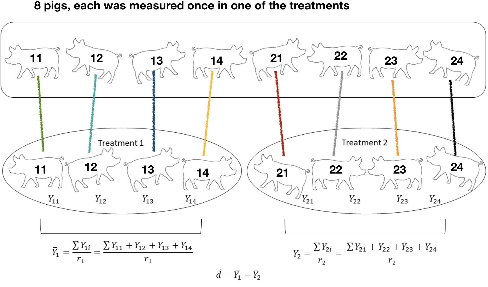
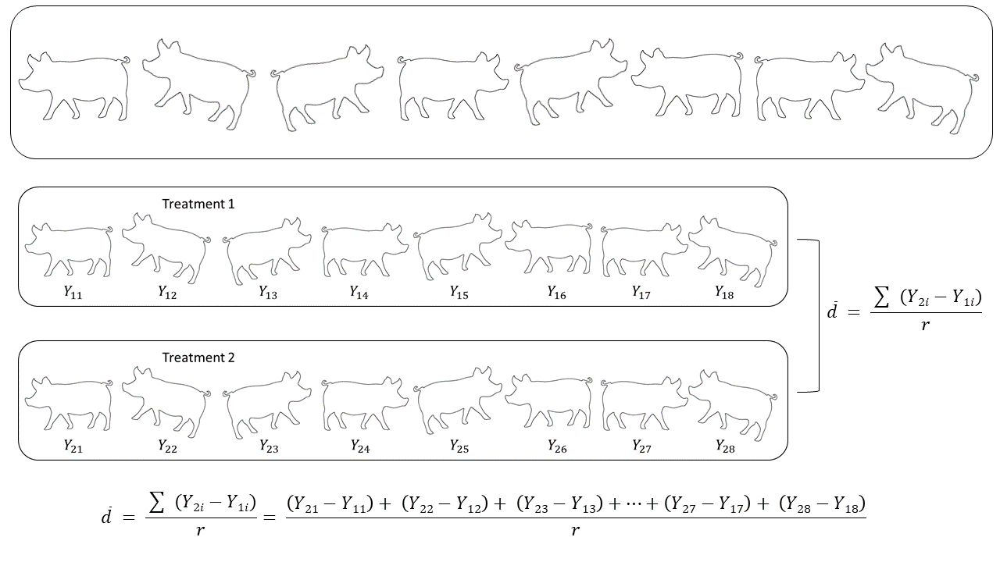

<!DOCTYPE html>
<html >

<head>

  <meta charset="UTF-8">
  <meta http-equiv="X-UA-Compatible" content="IE=edge">
  <title>08.0_TwoPops.utf8.md</title>
  <meta name="description" content="">
  <meta name="generator" content="bookdown 0.7 and GitBook 2.6.7">

  <meta property="og:title" content="08.0_TwoPops.utf8.md" />
  <meta property="og:type" content="book" />
  
  
  
  

  <meta name="twitter:card" content="summary" />
  <meta name="twitter:title" content="08.0_TwoPops.utf8.md" />
  
  
  


  <meta name="viewport" content="width=device-width, initial-scale=1">
  <meta name="apple-mobile-web-app-capable" content="yes">
  <meta name="apple-mobile-web-app-status-bar-style" content="black">
  
  


<script src="libs/jquery-2.2.3/jquery.min.js"></script>
<link href="libs/gitbook-2.6.7/css/style.css" rel="stylesheet" />
<link href="libs/gitbook-2.6.7/css/plugin-bookdown.css" rel="stylesheet" />
<link href="libs/gitbook-2.6.7/css/plugin-highlight.css" rel="stylesheet" />
<link href="libs/gitbook-2.6.7/css/plugin-search.css" rel="stylesheet" />
<link href="libs/gitbook-2.6.7/css/plugin-fontsettings.css" rel="stylesheet" />


<style type="text/css">
a.sourceLine { display: inline-block; line-height: 1.25; }
a.sourceLine { pointer-events: none; color: inherit; text-decoration: inherit; }
a.sourceLine:empty { height: 1.2em; }
.sourceCode { overflow: visible; }
code.sourceCode { white-space: pre; position: relative; }
div.sourceCode { margin: 1em 0; }
pre.sourceCode { margin: 0; }
@media screen {
div.sourceCode { overflow: auto; }
}
@media print {
code.sourceCode { white-space: pre-wrap; }
a.sourceLine { text-indent: -1em; padding-left: 1em; }
}
pre.numberSource a.sourceLine
  { position: relative; left: -4em; }
pre.numberSource a.sourceLine::before
  { content: attr(data-line-number);
    position: relative; left: -1em; text-align: right; vertical-align: baseline;
    border: none; pointer-events: all; display: inline-block;
    -webkit-touch-callout: none; -webkit-user-select: none;
    -khtml-user-select: none; -moz-user-select: none;
    -ms-user-select: none; user-select: none;
    padding: 0 4px; width: 4em;
    color: #aaaaaa;
  }
pre.numberSource { margin-left: 3em; border-left: 1px solid #aaaaaa;  padding-left: 4px; }
div.sourceCode
  {  }
@media screen {
a.sourceLine::before { text-decoration: underline; }
}
code span.al { color: #ff0000; font-weight: bold; } /* Alert */
code span.an { color: #60a0b0; font-weight: bold; font-style: italic; } /* Annotation */
code span.at { color: #7d9029; } /* Attribute */
code span.bn { color: #40a070; } /* BaseN */
code span.bu { } /* BuiltIn */
code span.cf { color: #007020; font-weight: bold; } /* ControlFlow */
code span.ch { color: #4070a0; } /* Char */
code span.cn { color: #880000; } /* Constant */
code span.co { color: #60a0b0; font-style: italic; } /* Comment */
code span.cv { color: #60a0b0; font-weight: bold; font-style: italic; } /* CommentVar */
code span.do { color: #ba2121; font-style: italic; } /* Documentation */
code span.dt { color: #902000; } /* DataType */
code span.dv { color: #40a070; } /* DecVal */
code span.er { color: #ff0000; font-weight: bold; } /* Error */
code span.ex { } /* Extension */
code span.fl { color: #40a070; } /* Float */
code span.fu { color: #06287e; } /* Function */
code span.im { } /* Import */
code span.in { color: #60a0b0; font-weight: bold; font-style: italic; } /* Information */
code span.kw { color: #007020; font-weight: bold; } /* Keyword */
code span.op { color: #666666; } /* Operator */
code span.ot { color: #007020; } /* Other */
code span.pp { color: #bc7a00; } /* Preprocessor */
code span.sc { color: #4070a0; } /* SpecialChar */
code span.ss { color: #bb6688; } /* SpecialString */
code span.st { color: #4070a0; } /* String */
code span.va { color: #19177c; } /* Variable */
code span.vs { color: #4070a0; } /* VerbatimString */
code span.wa { color: #60a0b0; font-weight: bold; font-style: italic; } /* Warning */
</style>

<link rel="stylesheet" href="style.css" type="text/css" />
</head>

<body>


  <div class="book without-animation with-summary font-size-2 font-family-1" data-basepath=".">

    <div class="book-summary">
      <nav role="navigation">

<ul class="summary">
<li><a href="./">Introduction to Applied Statistics</a></li>

<li class="divider"></li>
<li class="chapter" data-level="1" data-path=""><a href="#ch2pops"><i class="fa fa-check"></i><b>1</b> Two Populations Means</a><ul>
<li class="chapter" data-level="1.1" data-path=""><a href="#LearnObj8"><i class="fa fa-check"></i><b>1.1</b> Learning Objectives for Chapter</a></li>
<li class="chapter" data-level="1.2" data-path=""><a href="#two-populations"><i class="fa fa-check"></i><b>1.2</b> Two Populations</a></li>
<li class="chapter" data-level="1.3" data-path=""><a href="#hypothesis-testing"><i class="fa fa-check"></i><b>1.3</b> Hypothesis Testing</a></li>
<li class="chapter" data-level="1.4" data-path=""><a href="#types-of-samples-to-compare-two-populations"><i class="fa fa-check"></i><b>1.4</b> Types of samples to compare two populations</a><ul>
<li class="chapter" data-level="1.4.1" data-path=""><a href="#two-samples-of-independent-observations"><i class="fa fa-check"></i><b>1.4.1</b> Two samples of Independent Observations</a></li>
<li class="chapter" data-level="1.4.2" data-path=""><a href="#one-sample-of-paired-observations"><i class="fa fa-check"></i><b>1.4.2</b> One sample of Paired Observations</a></li>
<li class="chapter" data-level="1.4.3" data-path=""><a href="#advantages-and-disadvantages-of-paired-observations"><i class="fa fa-check"></i><b>1.4.3</b> Advantages and disadvantages of paired observations</a></li>
</ul></li>
<li class="chapter" data-level="1.5" data-path=""><a href="#compare2Variances"><i class="fa fa-check"></i><b>1.5</b> Comparing Sample Variances</a></li>
<li class="chapter" data-level="1.6" data-path=""><a href="#cases-to-test-the-difference-between-two-population-means"><i class="fa fa-check"></i><b>1.6</b> Cases to test the difference between two population means</a><ul>
<li class="chapter" data-level="1.6.1" data-path=""><a href="#case-1-independent-samples-with-equal-population-variances-case1"><i class="fa fa-check"></i><b>1.6.1</b> Case 1: Independent samples with equal population variances (#Case1)</a></li>
<li class="chapter" data-level="1.6.2" data-path=""><a href="#bean-drought-example-independent-observations-equal-variances"><i class="fa fa-check"></i><b>1.6.2</b> Bean Drought Example: independent observations, equal variances</a></li>
<li class="chapter" data-level="1.6.3" data-path=""><a href="#case-2-independent-samples-with-unequal-population-variances-case2"><i class="fa fa-check"></i><b>1.6.3</b> Case 2: Independent samples with unequal population variances (#Case2)</a></li>
<li class="chapter" data-level="1.6.4" data-path=""><a href="#bean-drought-example-independent-observations-with-unequal-variances"><i class="fa fa-check"></i><b>1.6.4</b> Bean Drought Example: independent observations with unequal variances</a></li>
<li class="chapter" data-level="1.6.5" data-path=""><a href="#case-3-paired-samples-case3"><i class="fa fa-check"></i><b>1.6.5</b> Case 3: Paired samples (#Case3)</a></li>
<li class="chapter" data-level="1.6.6" data-path=""><a href="#two-populations-equation-summary"><i class="fa fa-check"></i><b>1.6.6</b> Two Populations Equation Summary</a></li>
</ul></li>
<li class="chapter" data-level="1.7" data-path=""><a href="#confidence-intervals"><i class="fa fa-check"></i><b>1.7</b> Confidence Intervals</a></li>
<li class="chapter" data-level="1.8" data-path=""><a href="#decision-to-reject-or-fail-to-reject-the-null-hypothesis"><i class="fa fa-check"></i><b>1.8</b> Decision to Reject or Fail to Reject the Null Hypothesis</a></li>
<li class="chapter" data-level="1.9" data-path=""><a href="#bean-drought-example---paired"><i class="fa fa-check"></i><b>1.9</b> Bean Drought Example - Paired</a><ul>
<li class="chapter" data-level="1.9.1" data-path=""><a href="#stating-the-hypotheses"><i class="fa fa-check"></i><b>1.9.1</b> Stating the Hypotheses</a></li>
<li class="chapter" data-level="1.9.2" data-path=""><a href="#sampling-method"><i class="fa fa-check"></i><b>1.9.2</b> Sampling Method</a></li>
<li class="chapter" data-level="1.9.3" data-path=""><a href="#calculating-sample-averages-and-the-average-of-the-difference"><i class="fa fa-check"></i><b>1.9.3</b> Calculating Sample Averages and the Average of the Difference</a></li>
<li class="chapter" data-level="1.9.4" data-path=""><a href="#calculating-the-variance-of-the-difference"><i class="fa fa-check"></i><b>1.9.4</b> Calculating the Variance of the Difference</a></li>
<li class="chapter" data-level="1.9.5" data-path=""><a href="#calculating-the-standard-error-of-the-difference"><i class="fa fa-check"></i><b>1.9.5</b> Calculating the Standard Error of the Difference</a></li>
<li class="chapter" data-level="1.9.6" data-path=""><a href="#calculating-the-t-statistic"><i class="fa fa-check"></i><b>1.9.6</b> Calculating the t-statistic</a></li>
</ul></li>
<li class="chapter" data-level="1.10" data-path=""><a href="#Ex8"><i class="fa fa-check"></i><b>1.10</b> Exercises</a></li>
<li class="chapter" data-level="1.11" data-path=""><a href="#Hwk8"><i class="fa fa-check"></i><b>1.11</b> Homework : Two Population Means</a><ul>
<li class="chapter" data-level="1.11.1" data-path=""><a href="#walking-spiders"><i class="fa fa-check"></i><b>1.11.1</b> Walking Spiders</a></li>
<li class="chapter" data-level="1.11.2" data-path=""><a href="#rat-life"><i class="fa fa-check"></i><b>1.11.2</b> Rat Life</a></li>
</ul></li>
<li class="chapter" data-level="1.12" data-path=""><a href="#laboratory-exercises"><i class="fa fa-check"></i><b>1.12</b> Laboratory Exercises</a><ul>
<li class="chapter" data-level="1.12.1" data-path=""><a href="#Lab8PLS"><i class="fa fa-check"></i><b>1.12.1</b> Plant Sciences</a></li>
<li class="chapter" data-level="1.12.2" data-path=""><a href="#Lab8ANS"><i class="fa fa-check"></i><b>1.12.2</b> Animal Sciences</a></li>
</ul></li>
</ul></li>
<li class="divider"></li>
<li><a href="https://" target="blank">Published with bookdown</a></li>

</ul>

      </nav>
    </div>

    <div class="book-body">
      <div class="body-inner">
        <div class="book-header" role="navigation">
          <h1>
            <i class="fa fa-circle-o-notch fa-spin"></i><a href="./"></a>
          </h1>
        </div>

        <div class="page-wrapper" tabindex="-1" role="main">
          <div class="page-inner">

            <section class="normal" id="section-">
<!--bookdown:title:end-->
<!--bookdown:title:start-->
<div id="ch2pops" class="section level1">
<h1><span class="header-section-number">Chapter 1</span> Two Populations Means</h1>
<div id="LearnObj8" class="section level2">
<h2><span class="header-section-number">1.1</span> Learning Objectives for Chapter</h2>
<ol style="list-style-type: decimal">
<li>Compare two population means based on two samples</li>
<li>Determine if samples are paired or unpaired (“independent”) when comparing two means</li>
<li>State the null and alternative hypothesis for a two sample t-test</li>
<li>Calculate the sample averages and the difference of the sample averages</li>
<li>Perform an F-test of homogeneity of variance by calculating sample variances, and determine if you can “pool” the sample variances</li>
<li>Calculate the standard error of the difference</li>
<li>Describe the three cases for comparing two populations means and determine when each one is appropriate</li>
<li>Calculate the t-statistic and identify the appropriate critical t-value</li>
<li>Interpret the results of a t-test in terms of the original scientific question</li>
<li>Sketch the t distribution, with the following parts labeled:</li>
</ol>
<ul>
<li>the critical t value</li>
<li>the test statistic value for the sample</li>
<li>the p value area under the curve</li>
<li>the alpha level area under the curve</li>
<li>where the CI bounds would lie on the X axis (approximately)</li>
</ul>
</div>
<div id="two-populations" class="section level2">
<h2><span class="header-section-number">1.2</span> Two Populations</h2>
<p>We have learned in the previous chapters how to determine if the mean of a population sampled is significantly different from a hypothesized value. However, researchers may want to know if two populations are significantly different from each other when both populations are sampled and neither of the means are known. In research experiments, population means are hypothesized to differ when they represent different treatments that are applied to them. For example, one could conduct an experiment comparing a fertilized field to an unfertilized field to determine if they differ in yield, or an experiment comparing a high-carbohydrate diet to a high-protein diet to determine if diet affects cow’s milk quality. These experiments are conducted by taking samples from each of the populations and using the difference between the two samples to make inferences about the difference between the two treatments or the two populations.</p>
<div class="stattip">
<h1 id="steps-to-test-two-population-means">
Steps to Test Two Population Means
</h1>
<ol style="list-style-type: decimal">
<li>
<p>
State the null and alternative hypotheses about the two populations.
</p>
</li>
<li>
<p>
Collect samples from each population.
</p>
</li>
<li>
<p>
Calculate the sample averages, <span class="math inline"><span class="math inline">\(\bar{Y}_1\)</span></span> and <span class="math inline"><span class="math inline">\(\bar{Y}_2\)</span></span>, the difference between the averages,<span class="math inline"><span class="math inline">\(\bar{d}\)</span></span>, and the sample variances, <span class="math inline"><span class="math inline">\(S^2_1\)</span></span> and <span class="math inline"><span class="math inline">\(S^2_2\)</span></span>.
</p>
</li>
<li>
<p>
If you do not know whether the two population variances are equal, <span class="math inline"><span class="math inline">\(\sigma_1 = \sigma_2\)</span></span>, perform an F-test to determine if you can pool the sample variances.
</p>
</li>
<li>
<p>
Calculate the standard error of the difference <span class="math inline"><span class="math inline">\(S_{\bar{d}}\)</span></span> between the two samples accordingly.
</p>
</li>
<li>
<p>
Calculate the t-statistic using the calculated <span class="math inline"><span class="math inline">\(\bar{d}\)</span></span> and <span class="math inline"><span class="math inline">\(s_{\bar{d}}\)</span></span>
</p>
</li>
<li>
<p>
Compare the calculated t-statistic to the critical t-value, and decide whether to reject or fail to reject the null hypothesis
</p>
</li>
</ol>
</div>
</div>
<div id="hypothesis-testing" class="section level2">
<h2><span class="header-section-number">1.3</span> Hypothesis Testing</h2>
<p>Before starting calculations for the test of hypothesis, it is important to understand the scientific question being asked. The purpose of testing two population means is to determine if there is a statistically significant difference between two populations or two treatments. Thus, our null and alternative hypotheses can be stated as</p>
<p><br></p>
<p><span class="math display">\[\text{Null hypothesis: the mean of population 1 is equal to the mean of population 2} \\[15pt]\]</span>
<span class="math display">\[H_0 : \mu_1 = \mu_2 \quad \text{or} \quad \mu_{\bar{d}} = 0 \\[15pt]\]</span></p>
<p><span class="math display">\[\text{Alternative hypothesis: the mean of population 1 is not equal to the mean of population 2} \\[15pt]\]</span>
<span class="math display">\[H_1 : \mu_1 \neq \mu_2 \quad \text{or} \quad \mu_{\bar{d}} \neq 0\]</span></p>
<p><br></p>
<p>As it turns out, it is a lot better to pose hypotheses as inequalities, for example:</p>
<p><br></p>
<p><span class="math display">\[H_0 : \mu_2 \le \mu_1 + PSD \quad \text{or} \quad \mu_2 - \mu_1 \le PSD\]</span>
<span class="math display">\[H_0 : \mu_2 \gt \mu_1 + PSD \quad \text{or} \quad \mu_2 - \mu_1 \gt PSD\]</span></p>
<p><br></p>
<p>The reason for this is that just testing whether two means are different is not very informative. Presumably, all means are different, even if by an infinitesimal amount. So we already know that and it is not informative to test it. If we have large enough samples, the difference will always be detected. But by posing the hypothesis as a statement that says in which direction the difference goes and whether it is larger than a Practically Significant Difference, we have the opportunity to learn much more. In addition to that, we can use the PSD and the variances from the samples and we can calculate the <em>power</em> of the test, the probability of detecting a difference that is that large with the sample size available. If power is low, the inability to reject the null hypothesis does not mean much. The main point here is that we should pose hypotheses that give us the chance to learn more than what we already know. We know the means are different; but how different are they and which one is larger?</p>
</div>
<div id="types-of-samples-to-compare-two-populations" class="section level2">
<h2><span class="header-section-number">1.4</span> Types of samples to compare two populations</h2>
<p>There are two different methods of sampling to compare treatment means: <strong>independent</strong> observations and <strong>paired</strong> or dependent observations. It is important to understand how the two populations are sampled to decide which equations are appropriate for the experiment. If observations are paired, where each pair consists of one observation from one population and one observation from the other population, it is as if each pair were a block.</p>
<div id="two-samples-of-independent-observations" class="section level3">
<h3><span class="header-section-number">1.4.1</span> Two samples of Independent Observations</h3>
<p>Samples are considered <strong>independent</strong> when there is no relationship between the observations in one treatment and the observations in the other treatment, and the experimental units are randomly and independently assigned to a given treatment. For example, suppose that 8 pigs are available to determine the effects of two diets on weight gain. Individual pigs can be randomly assigned to one of the two different diets and their weight gain recorded after some time. In such case, each pig would be an experimental unit. There would be no reason to link the weight gain of any pig in one of the diets with any specific pig in the other diet. Weight gains in the two treatments are independent from each other.</p>
<p>Another way to understand the idea of independence of observations in this case is to think that the actual weight gain of each individual pig will have two important causes or sources of variation among pigs: diet and individual pig differences. Individual pigs will differ from each other because of their “personal” body type and composition and their “personal” level of activity and food use efficiency. These individual effects can potentially be different for all 8 pigs. The number of “individual pig”&quot; effects and the number of observations would be the same. Assuming that the pigs were randomly selected from a relevant population, their individual effects would not be related to each other in any way (Figure <a href="#fig:IndSamples">1.1</a>).</p>
<p><br></p>
<div class="figure" style="text-align: center"><span id="fig:IndSamples"></span>

<p class="caption">
Figure 1.1: A set of 8 independent pigs is randomly split into two treatments. Half of the eight pigs received Treatment 1 and half of the eight pigs received Treatment 2, where <span class="math inline">\(r = 4\)</span> is the sample size per treatment, and <span class="math inline">\(i = 1, 2, 3, 4\)</span> is the observation index for a given treatment. In this case, the random variable that estimates the difference between means is the difference between averages, where each average comes from 4 observations.
</p>
</div>
<p><br></p>
</div>
<div id="one-sample-of-paired-observations" class="section level3">
<h3><span class="header-section-number">1.4.2</span> One sample of Paired Observations</h3>
<p>Observations are considered <strong>paired</strong> or dependent when there is a relationship between observations in one treatment and observations in the other treatment. Each observation in one treatment is associated with one and only one observation in the other treatment by some grouping or pairing factor that can potentially affect weight gain. For example, observations that are made on the same experimental unit are obviously paired by the experimental unit. Observations that are made in the same area could also be considered to be paired. Many factors that can group observations, such as class, size, age, paddock, pen, furrow, etc.</p>
<p>Following the example of pig diets, instead of using 8 pigs measured once each, we could have used 8 pigs and measured their performance under each of the diets during two different periods. Suppose that in period 1, pigs 1-4 received the high protein diet and pigs 5-84 received the high carbohydrate diet. Then, after a period of equalization, diets were switched during period 2. In this case we would obtain a sample with 16 weight gains, but there would be only 8 individual pig effects, and each observation in one diet would be paired to an observation in the other diet because they were both obtained from the same pig. The number of observations would be twice the number of individual pig effects, which means that each pig effect would enter in two observations, thus introducing a correlation or lack of independence between observations.</p>
<p><br></p>
<div class="figure" style="text-align: center"><span id="fig:PairedMeasurements"></span>

<p class="caption">
Figure 1.2: Paired observations of eight pigs under two treatments. Each of the eight pigs has one measurement recorded for each treatment, where <span class="math inline">\(r = 8\)</span> is the number of observations per treatment. In this case, the random variable that estimates the difference between means is the average of differences between members of each pair, which comes from 8 pairs of observations.
</p>
</div>
<p><br></p>
<p>In the above example, the samples were paired because the same individual pigs were used for each treatment. Paired sampling is not limited to before-and-after experiments on the same individuals, however. It can be extended to situations where there is some relationship or dependency between the replicates across treatment groups. For example, pigs that are from the same pen share genetic and environmental effects that are unique to that pen, and we can therefore treat the pens (and the pigs that come from them) as our experimental units. Imagine there are three different pig pens. From each pen, two pigs are randomly selected and assigned to different diets. The pigs that come from the same pen are “paired” and the differences between weights from each of the paired samples are measured. In this example, the experimental unit is not individual pigs but the pens that the pair of pigs come from.</p>
<p>Pairing of observations can result from other experimental procedures, and those pairings may have to be incorporated in the analysis. Pigs that are from the same litter and pen share genetic and environmental effects that are unique to that pen, and we can treat pairs of individuals from the same pen as associated by the common pen effect. Observations on twins are paired due to common genetic makeup, common womb environment and potentially common rearing environment.</p>
<p><br></p>
<div class="figure" style="text-align: center"><span id="fig:PairedSamples"></span>

<p class="caption">
Figure 1.3: Paired observations of pigs from the same pen under two treatments. Only one pig from each of the three pens received treatment 1, while the remaining pig from each of the three pens recieved treatment 2. Each pen has two measurements recorded for each treatment, where <span class="math inline">\(r = 3\)</span> is the number of observations per treatment, and <span class="math inline">\(i = 1,2,3\)</span> is the observation number for a given treatment.
</p>
</div>
<p><br></p>
</div>
<div id="advantages-and-disadvantages-of-paired-observations" class="section level3">
<h3><span class="header-section-number">1.4.3</span> Advantages and disadvantages of paired observations</h3>
<p>Why use independent or paired procedures? Each has advantages and disadvantages, and the best choice depends on many factors, but particularly on the cost of using each experimental unit, on the amount of variation among units (e.g. pigs) and the degree to which individual unit effects remain constant from one observation to another.</p>
<ul>
<li><p>Independent observations may require more units (pigs) than paired ones for the same total number of observations.</p></li>
<li><p>Paired observations remove the individual effects from the errors, because each unit is observed under both treatments and values subtracted from each other. By subtracting, the error due to individual (pig) cancels out.</p></li>
<li><p>If individual effects are small relative to other sources of error, treating the observations as pairs is inefficient and reduces the power of the test.</p></li>
</ul>
</div>
</div>
<div id="compare2Variances" class="section level2">
<h2><span class="header-section-number">1.5</span> Comparing Sample Variances</h2>
<p>When observations are independent, we will have two estimated variances, one for each sample. In some cases we may have previous information indicating that the population variances are equal or unequal and we use that information to determine if we can pool the estimates of the variance from each sample. When there is no information about the equality of the variances we can use an F-test to determine if variances estimates can be pooled. Pooling variance estimates is very desirable because it increases the degrees of freedom and results in tests that have lower probability of error Type II.</p>
<p>Population variances are estimated with the sample variances, <span class="math inline">\(S^2_i\)</span>, for each of the populations or treatments.</p>
<p><br></p>
<p><span class="math display">\[S^2_i = \frac{\sum (Y_{ij} - \bar{Y}_i)^2}{r_i - 1}\]</span></p>
<p><br></p>
<p><br></p>
<p>To perform a test of equality of variances we need a statistics that has a known distribution to be able to associate probabilities with sample results. It turns out that, as seen in the <a href="#FDist">F Distribution section of Chapter 6</a>, a quotient of independent estimates of the same variance has an F distribution. Therefore, we use the F distribution to determine the probability of obtaining variance estimates that are as different as or more than observed when indeed the population variance is the same. If the probability is too small (we use <span class="math inline">\(\alpha = 0.10\)</span> for this test), we reject the equality of variances.</p>
<p>When the variances are found to be different, we clearly need to estimate two different variances. However, when we cannot reject the hypothesis of equality, it may simply be due to lack of power, which usually results from small sample size. Therefore, the decision to pool variances because of a failure to reject the proposed equality may not be a good decision. In the end, what really matters is how much the variances differ. For practical purposes, in this course we test the equality of variances with <span class="math inline">\(\alpha = 0.10\)</span>, and if we fail to reject the equality, we pool the variance estimates from the two samples.</p>
<p><br></p>
<p><span class="math display">\[\text{Null hypothesis: the variance of population 1 is equal to the variance of population 2} \\[20pt]\]</span>
<span class="math display">\[H_0 : \sigma_1 = \sigma_2  \\[20pt]\]</span></p>
<p><span class="math display">\[\text{Alternative hypothesis: the variance of population 1 is not equal to the variance of population 2} \\[25pt]\]</span>
<span class="math display">\[H_1 : \sigma_1 \neq \sigma_2  \\[20pt]\]</span></p>
<p><br></p>
<p><strong>Calculated F</strong></p>
<p><br></p>
<div class="figure" style="text-align: center"><span id="fig:FCurve"></span>

<p class="caption">
Figure 1.4: F-Distribution for testing the equality of variances. The shaded area on the right is <span class="math inline">\(lpha/2\)</span>. Calculated F values in the right tail lead to rejection of the hypothesis of equality of variances.
</p>
</div>
<p><br></p>
<p>In the calculation, the larger of the two variances is used as the numerator and the smaller of the two variances as the denominator.</p>
<p><br></p>
<p><span class="math display">\[F = \frac { \text{larger} \ S^2}{\text{smaller} \ S^2} \qquad \text{with} \qquad df_{\text{numerator}} = r_{\text{larger}} -1 , df_{\text{denominator}} = r_{\text{smaller}} -1\]</span></p>
<p><br></p>
<p>This calculated F-value can be tested for significance against the critical F-value on the F-distribution table. The degrees of freedom for the two samples are needed to identify the critical F-value on the F-distribution table to determine if the calculated F-value is significant and if our sample variances are equal. Since this is a two-tailed F-test, the <span class="math inline">\(\alpha\)</span> value to determine the critical F-value, <span class="math inline">\(F_{crit}\)</span>, will be divided by two, <span class="math inline">\(\frac{\alpha}{2}\)</span>.</p>
<p>The results of the F-test will help identify which case to use for calculating the standard error of the difference for our samples.</p>
<p><strong>Decision rule</strong></p>
<p>If <span class="math inline">\(F_{calc} &gt; F_{crit, \frac{\alpha}{2}}\)</span>, then the null hypothesis, <span class="math inline">\(H_0 : \sigma^2_1 = \sigma_2^2\)</span>), is rejected and the population variances are not equal.</p>
<p>If <span class="math inline">\(F_{calc} &lt; F_{crit, \frac{\alpha}{2}}\)</span>, then the null hypothesis, <span class="math inline">\(H_0 : \sigma_1^2 = \sigma_2^2\)</span>), is not rejected and the population variances are assumed to be equal.</p>
<p><br></p>
<div class="figure" style="text-align: center"><span id="fig:FTestDec"></span>

<p class="caption">
Figure 1.5: F-Test Decision Table from www.statistics4u.info
</p>
</div>
<p><br></p>
</div>
<div id="cases-to-test-the-difference-between-two-population-means" class="section level2">
<h2><span class="header-section-number">1.6</span> Cases to test the difference between two population means</h2>
<p>There are 3 cases to perform this test. When observations are independent, we can have two cases. Case 1 is the case when variances are known to be equal or the test results in non-rejection of equality of variances. Case 2 applies when variances are known to be unequal or the test results in the rejection of equality of variances. Paired observations are called Case 3, where there is only one variance, because the original set of paired observations reduces to a single set of differences that are treated as a single mean to be tested against 0. The equations for Cases 1 and 2 are the same up to the point where we either pool variances or not. The main subdivision between Cases 1 &amp; 2 vs, Case 3 is depicted with formulas and a numerical example in Figure <a href="#fig:PairedIndepCalcFig">1.6</a></p>
<p><br></p>
<div class="figure" style="text-align: center"><span id="fig:PairedIndepCalcFig"></span>

<p class="caption">
Figure 1.6: Test of differences between two population means when observations are paired (top) and independent (bottom). The independent case is further divided into Case 1 and Case 2 depending on whether the variance estimates can be pooled or not, respectively. When variances can be pooled, the equation for the variance of the difference between averages is further simplified by using the same pooled variance for both samples.
</p>
</div>
<p><br></p>
<div id="case-1-independent-samples-with-equal-population-variances-case1" class="section level3">
<h3><span class="header-section-number">1.6.1</span> Case 1: Independent samples with equal population variances (#Case1)</h3>
<p>When samples are independent, the random variable of interest is the difference between two independent means. We apply the [Properties of Mean and Variance] of random variables to obtain an estimate of the variance of <span class="math inline">\(\bar{d} = \bar{Y_2} - \bar{Y_1}\)</span>. Because the averages are independently obtained, the variance of the difference between averages is the sum of the variances of each average. Using the symbols “<span class="math inline">\(V\{\text{random variable}\}\)</span>” to represent the variance of a random variable, we have:</p>
<p>sample averages, <span class="math inline">\(\bar{Y_i}\)</span>, for each of the populations or treatments and the difference between these two averages, <span class="math inline">\(\bar{d}\)</span> are</p>
<p><br></p>
<p><span class="math display">\[\bar{Y}_i = \frac{1}{r_i} \sum_{j=1}^{r_i} Y_{ij} \qquad \text{where} \ i \ \text{is the population, 1 or 2, and } \ j \ \text{is the observation number} \\[20pt]\]</span></p>
<p><span class="math display">\[\bar{d} = \bar{Y}_1-\bar{Y}_2\]</span></p>
<p><br></p>
<p><span class="math display">\[V\{\bar{d}\} = V\{\bar{Y_2} - \bar{Y_1}\} = V\{\bar{Y_2}\} + V\{\bar{Y_1}\} \\[20pt]
= \frac{V\{Y_2\}}{r_2} + \frac{V\{Y_1\}}{r_1}\]</span></p>
<p><br></p>
<p>Those variances are estimated from the samples, so we use capital S to refer to the estimates:</p>
<p><br></p>
<p><span class="math display">\[S_{\bar{d}}^2 = \frac{S_{Y_2}^2}{r_2} + \frac{S_{Y_1}^2}{r_1}\]</span></p>
<p><br></p>
<p>In this case when the two population variances are equal, then the two sample variances are estimates of the same population variance. To get a better estimate of this single population variance we can pool the deviations about each average and obtained a pooled sample variance <span class="math inline">\((S_Y^2)\)</span> that has more degrees of freedom.</p>
<p><br></p>
<p><span class="math display">\[S_Y^2 = \frac{S_{Y_1}^2 \ (r_1-1) + S_{Y_2}^2 \ (r_2-1)}{(r_1 + r_2-2)} \qquad \text{with} \qquad df = r_1+r_2-2\]</span></p>
<p><br></p>
<p>The pooled variance is now applied to the equation for <span class="math inline">\(S_{\bar{d}}^2\)</span> to obtain</p>
<p><span class="math display">\[S_{\bar{d}}^2 = \frac{S_Y^2}{r_1} + \frac{S_Y^2}{r_2} \qquad \text{with} \qquad df = r_1+r_2-2\]</span></p>
<p><br></p>
<p>The test statistic for the hypothesis <span class="math inline">\(H_0: \mu_{\bar{d}} = 0\)</span> can be calculated as</p>
<p><br></p>
<p><span class="math display">\[t_{calc} = \frac{\bar{d}-\mu_{\bar{d}}}{S_{\bar{d}}} = \frac{\bar{d}}{S_{\bar{d}}}\]</span></p>
<p><br></p>
<p>The decision rule is as before, for a single population when variance was unknown (Figure <a href="#fig:NormalTails"><strong>??</strong></a>).</p>
</div>
<div id="bean-drought-example-independent-observations-equal-variances" class="section level3">
<h3><span class="header-section-number">1.6.2</span> Bean Drought Example: independent observations, equal variances</h3>
<p>Below is data collected on common bean plots that were randomly assigned to two different irrigation treatments: drought and normal irrigation. Yield data was collected from these plots and recorded in the table below.</p>
<p><br></p>
<table>
<thead>
<tr class="header">
<th align="right">Treatment</th>
<th align="center">Yield 1</th>
<th align="center">Yield 2</th>
<th align="center">Yield 3</th>
<th align="center">Yield 4</th>
<th align="center">Total</th>
<th align="center">Mean</th>
</tr>
</thead>
<tbody>
<tr class="odd">
<td align="right">Drought</td>
<td align="center">590</td>
<td align="center">720</td>
<td align="center">720</td>
<td align="center">190</td>
<td align="center">2220</td>
<td align="center">555</td>
</tr>
<tr class="even">
<td align="right">Irrigated</td>
<td align="center">2990</td>
<td align="center">2950</td>
<td align="center">2660</td>
<td align="center">2120</td>
<td align="center">10720</td>
<td align="center">2680</td>
</tr>
</tbody>
</table>
<p><br></p>
<div class="sourceCode" id="cb1"><pre class="sourceCode r"><code class="sourceCode r"><a class="sourceLine" id="cb1-1" data-line-number="1">bean.yield &lt;-<span class="st"> </span><span class="kw">data.frame</span>(</a>
<a class="sourceLine" id="cb1-2" data-line-number="2"> <span class="dt">yield =</span> <span class="kw">c</span>(<span class="st">&quot;yield 1&quot;</span>, <span class="st">&quot;yield 2&quot;</span>, <span class="st">&quot;yield 3&quot;</span>, <span class="st">&quot;yield 4&quot;</span>), </a>
<a class="sourceLine" id="cb1-3" data-line-number="3"> <span class="dt">drought =</span> <span class="kw">c</span>(<span class="dv">590</span>, <span class="dv">720</span>, <span class="dv">720</span>, <span class="dv">190</span> ), </a>
<a class="sourceLine" id="cb1-4" data-line-number="4"> <span class="dt">irrigated =</span> <span class="kw">c</span>(<span class="dv">2990</span>, <span class="dv">2950</span>, <span class="dv">2660</span>, <span class="dv">2120</span>))</a></code></pre></div>
<p><br></p>
<p><strong>Hypotheses</strong></p>
<p>This experiment features two distinctly defined treatments: drought and irrigated. Researchers want to determine if there is a significant difference between the two treatments, therefore, the null and alternative hypotheses can be stated as</p>
<p><br></p>
<p><span class="math display">\[\text{Null hypothesis:} \\[25pt] 
\text{the mean of the drought treatment is equal to the mean of the irrigated treatment, or} \\[25pt] 
\text{there is no difference between drought and irrigated treatments on common bean yield} \\[25pt]\]</span>
<span class="math display">\[\mu_1 = \mu_2  \quad \text{or} \quad \mu_{\bar{d}} = 0 \\[25pt]\]</span></p>
<p><span class="math display">\[\text{Alternative hypothesis: } \\[15pt] 
\text{the mean of the drought treatment is not equal to the mean of the irrigated treatment, or } \\[15pt]
\text{there is a difference between drought and irrigated treatments on common bean yield} \\[15pt]\]</span>
<span class="math display">\[\mu_1 \neq \mu_2 \quad \text{or} \quad \mu_{\bar{d}} \neq 0\]</span></p>
<p><br></p>
<p><strong>Sampling Method</strong></p>
<p>Since the samples are randomly assigned to the treatment and there is no additional information provided on how each sample was assigned to a given treatment, we can assume that the observations are independent of one another.</p>
<p><strong>Difference between averages</strong></p>
<p>As the calculations begin on the two treatments of this experiment, we will designate <strong>Sample 1</strong> as the <strong>drought</strong> treatment and <strong>sample 2</strong> as the <strong>irrigated</strong> treatment to simplify labeling. Be careful to maintain consistency of this designation throughout the complete set of calculations.</p>
<p>Since the observations are independent, the average of each sample is calculated as</p>
<p><br></p>
<p><span class="math display">\[\begin{equation}
\bar{Y}_1 = \frac{\sum Y_{i1}}{r_1} \\[20pt]
= \frac{590 + 720 + 720 + 190}{4} \\[20pt]
= 555 \\[25pt]
\bar{Y}_2 = \frac{\sum Y_{i2}}{r_2} \\[20pt]
= \frac{2990 + 2950 + 2660 + 2120}{4} \\[20pt]
= 2680
\end{equation}\]</span>
<br></p>
<p><span class="math display">\[\bar{Y}_2 = \frac{\sum Y_{2i}}{r_2} = \frac{2990 + 2950 + 2660 + 2120}{4} = 2680\]</span></p>
<p><br></p>
<p>and the average difference is calculated as the difference between the two averages.</p>
<p><br></p>
<p><span class="math display">\[\bar{d} = \bar{Y}_2 - \bar{Y}_1 = 2680 - 555 = 2125\]</span></p>
<p><br></p>
<div class="sourceCode" id="cb2"><pre class="sourceCode r"><code class="sourceCode r"><a class="sourceLine" id="cb2-1" data-line-number="1"><span class="co">#the sum of the observations in each treatment</span></a>
<a class="sourceLine" id="cb2-2" data-line-number="2">sum.Y1 &lt;-<span class="st"> </span><span class="kw">sum</span>(bean.yield<span class="op">$</span>drought)</a>
<a class="sourceLine" id="cb2-3" data-line-number="3">sum.Y2 &lt;-<span class="st"> </span><span class="kw">sum</span>(bean.yield<span class="op">$</span>irrigated)</a>
<a class="sourceLine" id="cb2-4" data-line-number="4"></a>
<a class="sourceLine" id="cb2-5" data-line-number="5"><span class="co">#the number of observations in each treatment</span></a>
<a class="sourceLine" id="cb2-6" data-line-number="6">r1 &lt;-<span class="st"> </span><span class="kw">length</span>(bean.yield<span class="op">$</span>drought)</a>
<a class="sourceLine" id="cb2-7" data-line-number="7">r2 &lt;-<span class="st"> </span><span class="kw">length</span>(bean.yield<span class="op">$</span>irrigated)</a>
<a class="sourceLine" id="cb2-8" data-line-number="8"></a>
<a class="sourceLine" id="cb2-9" data-line-number="9"><span class="co"># calculate the sample averages by dividing the sample sums by the number </span></a>
<a class="sourceLine" id="cb2-10" data-line-number="10"><span class="co"># of observations for each treatment &quot;by hand&quot;</span></a>
<a class="sourceLine" id="cb2-11" data-line-number="11">Ybar1 &lt;-<span class="st"> </span>sum.Y1 <span class="op">/</span><span class="st"> </span>r1</a>
<a class="sourceLine" id="cb2-12" data-line-number="12">Ybar2 &lt;-<span class="st"> </span>sum.Y2 <span class="op">/</span><span class="st"> </span>r2</a>
<a class="sourceLine" id="cb2-13" data-line-number="13"></a>
<a class="sourceLine" id="cb2-14" data-line-number="14"><span class="co"># a simpler method to calculate the sample averages</span></a>
<a class="sourceLine" id="cb2-15" data-line-number="15">Ybar1 &lt;-<span class="st"> </span><span class="kw">mean</span>(bean.yield<span class="op">$</span>drought)</a>
<a class="sourceLine" id="cb2-16" data-line-number="16">Ybar2 &lt;-<span class="st"> </span><span class="kw">mean</span>(bean.yield<span class="op">$</span>irrigated)</a>
<a class="sourceLine" id="cb2-17" data-line-number="17"></a>
<a class="sourceLine" id="cb2-18" data-line-number="18"><span class="co"># calculate the average of the difference between the two treatments</span></a>
<a class="sourceLine" id="cb2-19" data-line-number="19">dbar &lt;-<span class="st"> </span>Ybar2 <span class="op">-</span><span class="st"> </span>Ybar1</a></code></pre></div>
<p><br></p>
<p><strong>Sample Variances</strong></p>
<p>Before we determine if we can pool our sample variances, we need to determine if the population variances are equal. Information on the equality of the population variances may be provided for a given question. However, in the absence of this information, the equality of the sample variances can be tested as follows.</p>
<p><br></p>
<p><span class="math display">\[S^2_{Y_1} = \frac{\sum (Y_{1i} - \bar{Y}_1)^2}{r_1 - 1}\\[20pt]
= \frac{(590 - 555)^2 + (720 - 555)^2 + (720-555)^2 + (190-555)^2}{4 - 1} = 62966.67\]</span></p>
<p><br></p>
<p><span class="math display">\[S^2_{Y_2} = \frac{\sum (Y_{2i} - \bar{Y}_2)^2}{r_2 - 1}\\[20pt]
= \frac{(2990 - 2680)^2 + (2950 - 2680)^2 + (2660 - 2680)^2 + (2120 - 2680)^2}{4 -1} = 161000\]</span></p>
<p><br></p>
<div class="sourceCode" id="cb3"><pre class="sourceCode r"><code class="sourceCode r"><a class="sourceLine" id="cb3-1" data-line-number="1"><span class="co"># calculate the sample variances for each treatment &quot;by hand&quot;</span></a>
<a class="sourceLine" id="cb3-2" data-line-number="2">var1 &lt;-<span class="st"> </span><span class="kw">sum</span>((bean.yield<span class="op">$</span>drought <span class="op">-</span><span class="st"> </span>Ybar1)<span class="op">^</span><span class="dv">2</span>) <span class="op">/</span><span class="st"> </span>(r1 <span class="op">-</span><span class="st"> </span><span class="dv">1</span>)</a>
<a class="sourceLine" id="cb3-3" data-line-number="3">var2 &lt;-<span class="st"> </span><span class="kw">sum</span>((bean.yield<span class="op">$</span>irrigated <span class="op">-</span><span class="st"> </span>Ybar2)<span class="op">^</span><span class="dv">2</span>) <span class="op">/</span><span class="st"> </span>(r2 <span class="op">-</span><span class="st"> </span><span class="dv">1</span>)</a>
<a class="sourceLine" id="cb3-4" data-line-number="4"></a>
<a class="sourceLine" id="cb3-5" data-line-number="5"><span class="co"># a simpler way to calculate the sample variances</span></a>
<a class="sourceLine" id="cb3-6" data-line-number="6">var1 &lt;-<span class="st"> </span><span class="kw">var</span>(bean.yield<span class="op">$</span>drought)</a>
<a class="sourceLine" id="cb3-7" data-line-number="7">var2 &lt;-<span class="st"> </span><span class="kw">var</span>(bean.yield<span class="op">$</span>irrigated)</a>
<a class="sourceLine" id="cb3-8" data-line-number="8"></a>
<a class="sourceLine" id="cb3-9" data-line-number="9"><span class="co"># both methods yield the same answers</span></a></code></pre></div>
<p><strong>Test of equality of variances</strong></p>
<p>The purpose of an F-test is to determine if the population variances are different, therefore the null hypothesis is that the population variance of the drought treatment is equal to the population variance of the irrigated treatment. If the population variances are not different, sample variances can be pooled to provide a more accurate estimate of the common variance.</p>
<p>The calculated F-value is simply the ratio of the larger sample variance divided by the smaller sample variance, so the critical F value will always be in the right tail. The test should be performed with <span class="math inline">\(\alpha\)</span> equal to 0.05 or 0.10 to have greater power.</p>
<p><br></p>
<p><br></p>
<p><span class="math display">\[F_{calc} = \frac{ \text{larger} \ S^2 }{\text{smaller} \ S^2} = \frac{161000}{62966.67} = 2.56\]</span></p>
<p><br></p>
<div class="sourceCode" id="cb4"><pre class="sourceCode r"><code class="sourceCode r"><a class="sourceLine" id="cb4-1" data-line-number="1"><span class="co"># since var.2 is greater than var.1, var.2 will be used as the numerator </span></a>
<a class="sourceLine" id="cb4-2" data-line-number="2"><span class="co"># and var.1 will be used as the denominator </span></a>
<a class="sourceLine" id="cb4-3" data-line-number="3">Fcalc &lt;-<span class="st"> </span>var2 <span class="op">/</span><span class="st"> </span>var1</a></code></pre></div>
<p>Next, compare the calculated F-value, <span class="math inline">\(F_{calc}\)</span>, to the critical F-values, <span class="math inline">\(F_{crit}\)</span>, which can be found in F-Distribution table or simply in R. With <span class="math inline">\(df_{denominator} = 3\)</span> , <span class="math inline">\(df_{numerator} = 3\)</span> and <span class="math inline">\(\alpha = 0.10\)</span>, it is determined <span class="math inline">\(F_{crit} = 9.2766281531\)</span></p>
<p><br></p>
<div class="sourceCode" id="cb5"><pre class="sourceCode r"><code class="sourceCode r"><a class="sourceLine" id="cb5-1" data-line-number="1"><span class="co"># calculation of F-critical value using alpha = 0.10 /2 since the F-test is two-tailed</span></a>
<a class="sourceLine" id="cb5-2" data-line-number="2">p &lt;-<span class="st"> </span><span class="fl">0.10</span> <span class="op">/</span><span class="st"> </span><span class="dv">2</span></a>
<a class="sourceLine" id="cb5-3" data-line-number="3">Fcrit.upper &lt;-<span class="st"> </span><span class="kw">qf</span>(p, r1 <span class="op">-</span><span class="st"> </span><span class="dv">1</span>, r2 <span class="op">-</span><span class="st"> </span><span class="dv">1</span>, <span class="dt">lower.tail =</span> <span class="ot">FALSE</span>)</a></code></pre></div>
<p><br></p>
<p>Since the F-statistic falls within the two critical F-values, we fail to reject the null hypothesis that the two population variances are equal.</p>
<p><br></p>
<p><span class="math display">\[F_{calc} = 2.56 &lt; F_{crit_\alpha} = 9.28\]</span> and</p>
<p>Therefore, the population variances can be treated as equal and the sample variances can be pooled.</p>
<p><br></p>
<p></p>
<p><br></p>
<p><strong>Pooling Sample Variances</strong></p>
<p>Since the F-test did not reject equality of variances, sample variances are pooled to provide a more accurate estimate of the true variance. Since the two sample sizes are the same, <span class="math inline">\(r_1 = 4\)</span> and <span class="math inline">\(r_2 = 4\)</span>, the following equation is used to pool the sample variances:</p>
<p><br></p>
<p><span class="math display">\[S_Y^2 = \frac{S_{Y_1}^2 \ (r_1-1) + S_{Y_2}^2 \ (r_2-1)}{(r_1 + r_2-2)}= \frac{62966.67 \times 3 + 161000 \times 3}{4 + 4 - 2} = 111983.33\]</span></p>
<p><br></p>
<div class="sourceCode" id="cb6"><pre class="sourceCode r"><code class="sourceCode r"><a class="sourceLine" id="cb6-1" data-line-number="1"><span class="co"># Because sample sizes are the same, pooled variance can be calculated </span></a>
<a class="sourceLine" id="cb6-2" data-line-number="2"><span class="co"># by averaging the two sample variances</span></a>
<a class="sourceLine" id="cb6-3" data-line-number="3">pooled.var &lt;-<span class="st"> </span>( var1 <span class="op">+</span><span class="st"> </span>var2 ) <span class="op">/</span><span class="st"> </span><span class="dv">2</span></a></code></pre></div>
<p><br></p>
<p>since our two sample sizes are equal, the degrees of freedom are</p>
<p><br></p>
<p><span class="math display">\[df = 2(r-1) = 6\]</span></p>
<p><br></p>
<p><span class="math display">\[df = 2(r-1) = 6\]</span>
<br></p>
<div class="sourceCode" id="cb7"><pre class="sourceCode r"><code class="sourceCode r"><a class="sourceLine" id="cb7-1" data-line-number="1"><span class="co"># since r1 = r2 = 4, we can just use r = 4 for continued calculations</span></a>
<a class="sourceLine" id="cb7-2" data-line-number="2">r &lt;-<span class="st"> </span><span class="kw">length</span>(bean.yield<span class="op">$</span>yield)</a>
<a class="sourceLine" id="cb7-3" data-line-number="3"></a>
<a class="sourceLine" id="cb7-4" data-line-number="4"><span class="co"># the degrees of freedom are calculated as</span></a>
<a class="sourceLine" id="cb7-5" data-line-number="5">df &lt;-<span class="st"> </span><span class="dv">2</span> <span class="op">*</span><span class="st"> </span>(r <span class="op">-</span><span class="st"> </span><span class="dv">1</span> )</a></code></pre></div>
<p><strong>Standard Error of the Difference</strong></p>
<p>The standard error of the difference is calculated using the pooled variance <span class="math inline">\(s^2\)</span> and our sample size <span class="math inline">\(r\)</span>, where <span class="math inline">\(r_1 = r_2 = r\)</span></p>
<p><br></p>
<p><span class="math display">\[\begin{equation}

s_{\bar{d}} = \sqrt{ \frac{2s^2}{r\mathstrut}} \\[20pt]
=  \sqrt{\frac{2 \times  111983.33}{4\mathstrut}} \\[20pt]
= 236.63

\end{equation}\]</span></p>
<p><br></p>
<p><br></p>
<p><span class="math display">\[S_{\bar{d}} = \sqrt{\frac{2S_Y^2}{r}} = \sqrt{\frac{2 \times 111983.33}{4}} = 236.63\]</span></p>
<p><br></p>
<div class="sourceCode" id="cb8"><pre class="sourceCode r"><code class="sourceCode r"><a class="sourceLine" id="cb8-1" data-line-number="1"><span class="co"># the standard error of the difference is calculated by taking the square root</span></a>
<a class="sourceLine" id="cb8-2" data-line-number="2"><span class="co"># after multiplying the pooled variance by 2 and dividing by r</span></a>
<a class="sourceLine" id="cb8-3" data-line-number="3"></a>
<a class="sourceLine" id="cb8-4" data-line-number="4">se.dbar &lt;-<span class="st"> </span><span class="kw">sqrt</span>( (<span class="dv">2</span><span class="op">*</span>pooled.var) <span class="op">/</span><span class="st"> </span>r)</a></code></pre></div>
<p><br></p>
<p><strong>Calculating the t-statistic</strong></p>
<p>The t-statistic is used to determine if our null hypothesis is true that the population means are equal, <span class="math inline">\(H_0: \mu_1 = \mu_2\)</span> or that there is no difference between our population means, <span class="math inline">\(H_0: \mu_{\bar{d}} = 0\)</span>.</p>
<p>The t-statistic, <span class="math inline">\(t_{calc}\)</span>, is calculated by using the difference of the averages, <span class="math inline">\(\bar{d}\)</span> and the standard error of the difference, <span class="math inline">\(S_{\bar{d}}\)</span>.</p>
<p><br></p>
<p><span class="math display">\[t_{calc} = \frac{\bar{d} - \mu_{\bar{d}}}{S_{\bar{d}}} = \frac{2125 - 0}{236.63} = 8.98\]</span></p>
<p><br></p>
<div class="sourceCode" id="cb9"><pre class="sourceCode r"><code class="sourceCode r"><a class="sourceLine" id="cb9-1" data-line-number="1"><span class="co"># calculate the t-statistic by subtracting our hypothesized mean which is 0</span></a>
<a class="sourceLine" id="cb9-2" data-line-number="2"><span class="co"># from the average difference and dividing by the standard error of the difference</span></a>
<a class="sourceLine" id="cb9-3" data-line-number="3">t.calc &lt;-<span class="st"> </span>(dbar <span class="op">-</span><span class="st"> </span><span class="dv">0</span> ) <span class="op">/</span><span class="st"> </span>se.dbar</a>
<a class="sourceLine" id="cb9-4" data-line-number="4"></a>
<a class="sourceLine" id="cb9-5" data-line-number="5"><span class="co">#a quicker method to calculate the t-statistic </span></a>
<a class="sourceLine" id="cb9-6" data-line-number="6">(bean.test.equal &lt;-<span class="st"> </span><span class="kw">t.test</span>(bean.yield<span class="op">$</span>irrigated, bean.yield<span class="op">$</span>drought, </a>
<a class="sourceLine" id="cb9-7" data-line-number="7">                    <span class="dt">alternative =</span> <span class="st">&quot;two.sided&quot;</span>, <span class="dt">paired =</span> <span class="ot">FALSE</span>,</a>
<a class="sourceLine" id="cb9-8" data-line-number="8">                    <span class="dt">var.equal =</span> <span class="ot">TRUE</span>))</a></code></pre></div>
<pre><code>## 
##  Two Sample t-test
## 
## data:  bean.yield$irrigated and bean.yield$drought
## t = 8.9804322, df = 6, p-value = 0.0001065709
## alternative hypothesis: true difference in means is not equal to 0
## 95 percent confidence interval:
##  1545.998056 2704.001944
## sample estimates:
## mean of x mean of y 
##      2680       555</code></pre>
<div class="sourceCode" id="cb11"><pre class="sourceCode r"><code class="sourceCode r"><a class="sourceLine" id="cb11-1" data-line-number="1"><span class="co"># both calculations yield the same value</span></a></code></pre></div>
<p><br></p>
<p>The calculated t-statistic is compared to the critical t-value, <span class="math inline">\(t_{crit}\)</span>, which can be found in the Student’s t-Distribution Table. With the degrees of freedom of our pooled samples, <span class="math inline">\(df = 2(r-1) = 6\)</span>, and <span class="math inline">\(\alpha_{two-tailed} = \frac{0.05}{2}\)</span>, it is determined that <span class="math inline">\(t_{crit} = 2.4469118511\)</span></p>
<p>Since <span class="math inline">\(t_{calc} = 9.33 &gt; t_{crit} = 2.447\)</span>, we reject the null hypothesis that there is no difference between the drought treatment and the irrigated treatment.</p>
<p><br></p>
<p></p>
<p><br></p>
</div>
<div id="case-2-independent-samples-with-unequal-population-variances-case2" class="section level3">
<h3><span class="header-section-number">1.6.3</span> Case 2: Independent samples with unequal population variances (#Case2)</h3>
<p>When the population variances are unequal, we calculate the standard error of the difference using the known information about the sample variances and sample sizes. This equation is the same as for Vase1, except that it cannot be further simplified because <span class="math inline">\(\sigma_{Y_1}\)</span> and <span class="math inline">\(\sigma_{Y_2}\)</span> are different and their estimates cannot be pooled.</p>
<p><br></p>
<p><span class="math display">\[S_{\bar{d}} = \left ( \frac{S_{Y_1}^2}{r_1}+\frac{S_{Y_2}^2}{r_2} \right) ^ {1/2}\]</span></p>
<p><br></p>
<p>The test statistic is calculated as</p>
<p><br></p>
<p><span class="math display">\[t_{calc} = \frac{\bar{d}-\mu_{\bar{d}}}{S_{\bar{d}}}\]</span></p>
<p><br></p>
<p>Since the population variances are unequal, we cannot use the Student’s t-table to identify the critical t-value (<span class="math inline">\(t_\alpha\)</span>). Therefore, the critical t-value is calculated using Satterthwaite’s approximation, which is simply a weighted average of the t values for <span class="math inline">\(r_1\)</span> and <span class="math inline">\(r_2\)</span>, using the corresponding estimated variances of the averages as weights:</p>
<p><br></p>
<p><span class="math display">\[t_{critical} = \frac{t_1 S_{\bar{Y_1}}^2+t_2 S_{\bar{Y_2}}^2}{S_{\bar{Y_1}}^2+S_{\bar{Y_2}}^2}\]</span></p>
<p><br></p>
<p>where <span class="math inline">\(t_1\)</span> and <span class="math inline">\(t_2\)</span> are the values “from the table” with <span class="math inline">\(r_1 -1\)</span> and <span class="math inline">\(r_2 -1\)</span> degrees of freedom, respectively. For <span class="math inline">\(\alpha = 0.05\)</span> in R code <span class="math inline">\(t_1\)</span> is <code>qt(p = 0.975, df = r1 - 1)</code> and <span class="math inline">\(t_2\)</span> is <code>qt(p = 0.975, df = r2 - 1)</code>.</p>
</div>
<div id="bean-drought-example-independent-observations-with-unequal-variances" class="section level3">
<h3><span class="header-section-number">1.6.4</span> Bean Drought Example: independent observations with unequal variances</h3>
<p>We use the same data as above, but we decide NOT to pool the variances. Therefore, the variance of the difference between averages is:</p>
<p><br></p>
<p><span class="math display">\[S_{\bar{d}} = \left ( \frac{S_{Y_1}^2}{r_1}+\frac{S_{Y_2}^2}{r_2} \right) ^ {1/2} =  \left ( \frac{62966.67}{4}+\frac{161000}{4} \right) ^ {1/2} = 420.41 \\[30pt]
t_{calc} = \frac{2125 - 0}{420.41} = 5.055 \\[30pt]
t_1 = t_{0.975, df = 3} = 3.182446 \qquad \qquad t_2 = t_{0.975, df = 3} = 3.182446 \\[30pt]
t_{critical} = \frac{3.182446 \times 62966.67 + 3.182446 \times 161000} {62966.67 + 161000} = 3.182446\]</span></p>
<p><br></p>
<p>Because sample sizes are the same, the critical t corresponds to the critical t for common degrees of freedom and it would not be necessary to do the weighted average to arrive to the same number. The calculation is shown to remind the reader how it has to be done if sample sizes were different. The calculated t is larger than the critical t, so the null hypothesis is still rejected. However, note how the estimated standard deviation of the difference between averages is much larger than when the variances were pooled.</p>
<p>In R, the code to compute the t-test when variances cannot be pooled and samples are independent is:</p>
<div class="sourceCode" id="cb12"><pre class="sourceCode r"><code class="sourceCode r"><a class="sourceLine" id="cb12-1" data-line-number="1">(bean.test.unequal &lt;-<span class="st"> </span><span class="kw">t.test</span>(bean.yield<span class="op">$</span>irrigated, bean.yield<span class="op">$</span>drought, </a>
<a class="sourceLine" id="cb12-2" data-line-number="2">                    <span class="dt">alternative =</span> <span class="st">&quot;two.sided&quot;</span>, <span class="dt">paired =</span> <span class="ot">FALSE</span>,</a>
<a class="sourceLine" id="cb12-3" data-line-number="3">                    <span class="dt">var.equal =</span> <span class="ot">FALSE</span>))</a></code></pre></div>
<pre><code>## 
##  Welch Two Sample t-test
## 
## data:  bean.yield$irrigated and bean.yield$drought
## t = 8.9804322, df = 5.0352742, p-value = 0.0002754016
## alternative hypothesis: true difference in means is not equal to 0
## 95 percent confidence interval:
##  1518.014 2731.986
## sample estimates:
## mean of x mean of y 
##      2680       555</code></pre>
<p>The results are different from the test calculated by hand because R uses Welch’s method, which instead of calculating a weighted average of t-values calculates an approximated degrees of freedom for the sum of the variances. In general, Welch’s test is better than Student’s t test because it has equal or better power and achieves Type I error rates closer to the nominal <span class="math inline">\(\alpha\)</span>.</p>
</div>
<div id="case-3-paired-samples-case3" class="section level3">
<h3><span class="header-section-number">1.6.5</span> Case 3: Paired samples (#Case3)</h3>
<p>When observations are made on the same experimental unit (adjacent plots in the same field, pigs from the same pen) and are assigned to different treatments, they are considered <strong>paired samples</strong>. In this case, we treat the difference between the paired observations as the single variable of interest and we proceed as in the test for a single mean as seen in the previous chapter. The difference between paired averages, <span class="math inline">\(\bar{d}\)</span>, the variance of the difference, <span class="math inline">\(S_d^2\)</span>, the standard error of the difference, <span class="math inline">\(S_\bar{d}\)</span>, and the test statistic, <span class="math inline">\(t\)</span>, are calculated as</p>
<p><br></p>
<p><span class="math display">\[\bar{d} = \frac{\sum{d_i}}{r}\]</span></p>
<p><br></p>
<p><span class="math display">\[S_d^2 = \frac{\sum(d_i-\bar{d})^2}{r-1} \qquad \text{with} \qquad = r-1\]</span></p>
<p><br></p>
<p><span class="math display">\[S_\bar{d} = (\frac{S_d^2}{r})^{1/2}\]</span></p>
<p><br></p>
<p><span class="math display">\[t_{calc} = \frac{\bar{d}-\mu_{\bar{d}}}{S_{\bar{d}}}\]</span></p>
<p><br></p>
<p>If the null hypothesis is true, the calculated t has a Student’s t distribution with r-1 degrees of freedom</p>
</div>
<div id="two-populations-equation-summary" class="section level3">
<h3><span class="header-section-number">1.6.6</span> Two Populations Equation Summary</h3>
<table>
<caption><span id="tab:CaseEquations">Table 1.1: </span></caption>
<colgroup>
<col width="2%" />
<col width="6%" />
<col width="6%" />
<col width="8%" />
<col width="26%" />
<col width="20%" />
<col width="5%" />
<col width="18%" />
<col width="7%" />
</colgroup>
<thead>
<tr class="header">
<th align="right">Case</th>
<th align="center">Pop Variances</th>
<th align="center">Sample Size</th>
<th align="center">Paired / Independent</th>
<th align="center">Pooled Sample Variance</th>
<th align="center">Standard Error of the Difference</th>
<th align="center">df</th>
<th align="center">t-statistic</th>
<th align="center">Confidence Interval</th>
</tr>
</thead>
<tbody>
<tr class="odd">
<td align="right">1</td>
<td align="center">Equal</td>
<td align="center">Equal/ Not Equal</td>
<td align="center">Independent</td>
<td align="center"><span class="math inline">\(\frac{({{S_1}^2})({r_1-1})+({{S_2}^2})({r_2-1})}{(r_1+r_2-2)}\)</span></td>
<td align="center"><span class="math inline">\(\left (\frac{S^2}{r_1} + \frac{S^2}{r_2} \right )^{1/2}\)</span></td>
<td align="center"><span class="math inline">\(r_1+r_2-2\)</span></td>
<td align="center"><span class="math inline">\(\frac{\bar{d}-\mu_{\bar{d}}}{S_{\bar{d}}}\)</span></td>
<td align="center"><span class="math inline">\({L\atop U} = \bar{d} \pm t_\alpha S_\bar{d}\)</span></td>
</tr>
<tr class="even">
<td align="right">1</td>
<td align="center">Equal</td>
<td align="center">Equal</td>
<td align="center">Independent</td>
<td align="center"><span class="math inline">\(\frac{{{S_1}^2}+{{S_2}^2}}{2}\)</span></td>
<td align="center"><span class="math inline">\((\frac{{2S}^2}{r})^{1/2}\)</span></td>
<td align="center"><span class="math inline">\(2(r-1)\)</span></td>
<td align="center"><span class="math inline">\(\frac{(\bar{d}-\mu_{\bar{d}})}{S_{\bar{d}}}\)</span></td>
<td align="center"><span class="math inline">\({L\atop U} = \bar{d} \pm t_\alpha S_\bar{d}\)</span></td>
</tr>
<tr class="odd">
<td align="right">2</td>
<td align="center">Not Equal</td>
<td align="center">Equal/ Not Equal</td>
<td align="center">Independent</td>
<td align="center"></td>
<td align="center"><span class="math inline">\((\frac{{S_1}^2}{r_1}+\frac{{S_2}^2}{r_2})^{1/2}\)</span></td>
<td align="center"><span class="math inline">\(r_1+r_2-2\)</span></td>
<td align="center"><span class="math inline">\(\frac{\bar{d}-\mu_{\bar{d}}}{S_{\bar{d}}}\)</span></td>
<td align="center"><span class="math inline">\({L\atop U} = \bar{d} \pm t_\alpha S_\bar{d}\)</span></td>
</tr>
<tr class="even">
<td align="right">3</td>
<td align="center">Equal</td>
<td align="center">Equal</td>
<td align="center">Paired</td>
<td align="center"><span class="math inline">\(S_d^2=\frac{\sum(d_i-\bar{d})^2}{r-1}\)</span></td>
<td align="center"><span class="math inline">\((\frac{S_d^2}{r})^{1/2}\)</span></td>
<td align="center"><span class="math inline">\(r-1\)</span></td>
<td align="center"><span class="math inline">\(\frac{(\bar{d}-\mu_{\bar{d}})}{S_{\bar{d}}}\)</span></td>
<td align="center"><span class="math inline">\({L\atop U} = \bar{d} \pm t_\alpha S_\bar{d}\)</span></td>
</tr>
</tbody>
</table>
</div>
</div>
<div id="confidence-intervals" class="section level2">
<h2><span class="header-section-number">1.7</span> Confidence Intervals</h2>
<p>After identifying the difference between the two samples averages (<span class="math inline">\(\bar{d}\)</span>) and the standard error of the difference (<span class="math inline">\(S_{\bar{d}}\)</span>), a confidence interval for the mean difference can be calculated to understand the level of confidence associated with the estimated mean difference.</p>
<p><br></p>
<p><span class="math display">\[{U\atop L} = \bar{d} \pm \ t_{\alpha/2} \  S_\bar{d}\]</span></p>
<p><br></p>
<p>Note that for Case 2, you will need to calculate the critical t-value, however for Case 1 and 3 you can identify this value from the Student’s t-table with the appropriate degrees of freedom (see appropriate Case for equation). Depending on which case is used to calculate the standard error of the difference, the degrees of freedom to identify the critical t-value (<span class="math inline">\(t_{critical}\)</span>) will vary when calculating your confidence intervals.</p>
</div>
<div id="decision-to-reject-or-fail-to-reject-the-null-hypothesis" class="section level2">
<h2><span class="header-section-number">1.8</span> Decision to Reject or Fail to Reject the Null Hypothesis</h2>
<p>After all of the steps and calculations, the calculated t-value and the critical t-value, <span class="math inline">\(t_{\alpha}\)</span>, can be used in the final decision to reject or fail to reject the null hypothesis. <strong>The null hypothesis is never “accepted”, rather the decision is to fail to reject.</strong> Remember, the null hypothesis when testing two population means is that the two populations are equal, <span class="math inline">\(H_0 : \mu_1 = \mu_2 \ \ \text{or} \ \ \bar{d} = 0\)</span></p>
<p><br></p>
<p><span class="math display">\[\text{If} \quad t_{calc} &gt; t_{critical} \quad \text{and} \ P (t &gt; t_{calc}) &lt; \alpha \quad \text{ we reject the null hypothesis} \]</span>
<span class="math display">\[\text{If} \quad t_{calc} &lt; t_{critical} \quad \text{and} \ P (t &gt; t_{calc}) &gt; \alpha \quad \text{ we fail to reject the null hypothesis}\]</span></p>
<p><br></p>
<div class="figure" style="text-align: center"><span id="fig:DecisionMaking"></span>

<p class="caption">
Figure 1.7: General procedure for sampling two populations to make a final decision to reject or fail to reject the null hypothesis
</p>
</div>
<p><br></p>
</div>
<div id="bean-drought-example---paired" class="section level2">
<h2><span class="header-section-number">1.9</span> Bean Drought Example - Paired</h2>
<p>Below is same data collected on common bean plots from the previous example. <em>However, it is revealed that there are 4 randomly selected varieties of common bean that were each tested under both drought and normal irrigation</em>. The yields are grouped by variety. Yield data were collected from these plots and recorded in the table below.</p>
<p><br></p>
<p>Table: (#tab:BeanDrought) Common bean yield (kg/ha) is measured under drought treatment and irrigation in four varieties in Quilichao, Columbia (Sponchiado, 1985). The difference is calculated by subtracting the drought yield from the irrigated yield (sample 2 - sample 1)</p>
<p><br></p>
<table>
<thead>
<tr class="header">
<th align="right">Treatment</th>
<th align="center">Var 1</th>
<th align="center">Var 2</th>
<th align="center">Var 3</th>
<th align="center">Var 4</th>
<th align="center">Total</th>
<th align="center">Mean</th>
</tr>
</thead>
<tbody>
<tr class="odd">
<td align="right">Drought</td>
<td align="center">590</td>
<td align="center">720</td>
<td align="center">720</td>
<td align="center">190</td>
<td align="center">2220</td>
<td align="center">555</td>
</tr>
<tr class="even">
<td align="right">Irrigated</td>
<td align="center">2990</td>
<td align="center">2950</td>
<td align="center">2660</td>
<td align="center">2120</td>
<td align="center">10720</td>
<td align="center">2680</td>
</tr>
<tr class="odd">
<td align="right">Difference</td>
<td align="center">2400</td>
<td align="center">2230</td>
<td align="center">1940</td>
<td align="center">1930</td>
<td align="center">8500</td>
<td align="center">2125</td>
</tr>
</tbody>
</table>
<p><br></p>
<p><br></p>
<div id="stating-the-hypotheses" class="section level3">
<h3><span class="header-section-number">1.9.1</span> Stating the Hypotheses</h3>
<p><strong>Our null and alternative hypotheses will be the same as before</strong></p>
<p><br></p>
<p><span class="math display">\[\text{Null hypothesis: there is no difference in yield between drought and irrigated treatments on common bean} \\[15pt]\]</span></p>
<p><span class="math display">\[\mu_1 = \mu_2 \quad \text{or} \quad \mu_{\bar{d}} = 0\]</span></p>
<p><span class="math display">\[\text{Alternative hypothesis: there is a difference in yield between drought and irrigated treatments on common bean}\\\]</span>
<span class="math display">\[\mu_1 \neq \mu_2 \quad \text{or} \quad \mu_{\bar{d}} \neq 0\]</span></p>
<p><br></p>
</div>
<div id="sampling-method" class="section level3">
<h3><span class="header-section-number">1.9.2</span> Sampling Method</h3>
<p><strong>The sampling method is now different</strong>. Since there are four known common bean varieties planted in both drought and irrigated treatments, each variety is considered an experimental unit and the observation can be considered paired.</p>
</div>
<div id="calculating-sample-averages-and-the-average-of-the-difference" class="section level3">
<h3><span class="header-section-number">1.9.3</span> Calculating Sample Averages and the Average of the Difference</h3>
<p>For paired samples, we take the difference of each experimental unit (i.e., each variety) between the two treatments, then take the average of the differences.</p>
<p><br></p>
<p><span class="math display">\[\bar{d} = \frac{d_i}{r} =\frac{\sum(Y_{2i} - Y_{1i})}{r} = \frac{(2990-590) + (2950 -720) + (2660-720) + (2120-190)}{4} = 2125\]</span></p>
<p><br></p>
<div class="sourceCode" id="cb14"><pre class="sourceCode r"><code class="sourceCode r"><a class="sourceLine" id="cb14-1" data-line-number="1"><span class="co"># create a new column of the difference between the drought</span></a>
<a class="sourceLine" id="cb14-2" data-line-number="2"><span class="co"># and irrigated treatment columns</span></a>
<a class="sourceLine" id="cb14-3" data-line-number="3"></a>
<a class="sourceLine" id="cb14-4" data-line-number="4">bean.paired<span class="op">$</span>d_i &lt;-<span class="st"> </span>bean.paired<span class="op">$</span>irrigated <span class="op">-</span><span class="st"> </span>bean.paired<span class="op">$</span>drought </a>
<a class="sourceLine" id="cb14-5" data-line-number="5"></a>
<a class="sourceLine" id="cb14-6" data-line-number="6"><span class="co"># calculate d_i by adding the column containing the differences</span></a>
<a class="sourceLine" id="cb14-7" data-line-number="7"><span class="co"># between the two treatments</span></a>
<a class="sourceLine" id="cb14-8" data-line-number="8"></a>
<a class="sourceLine" id="cb14-9" data-line-number="9">sum.d_i &lt;-<span class="st"> </span><span class="kw">sum</span>(bean.paired<span class="op">$</span>d_i)</a>
<a class="sourceLine" id="cb14-10" data-line-number="10"></a>
<a class="sourceLine" id="cb14-11" data-line-number="11"><span class="co"># calculate r as the number of varieties (pairs of treatments)</span></a>
<a class="sourceLine" id="cb14-12" data-line-number="12"></a>
<a class="sourceLine" id="cb14-13" data-line-number="13">r.pair &lt;-<span class="st"> </span><span class="kw">length</span>(bean.paired<span class="op">$</span>variety)</a>
<a class="sourceLine" id="cb14-14" data-line-number="14"></a>
<a class="sourceLine" id="cb14-15" data-line-number="15"><span class="co"># calculate d_bar</span></a>
<a class="sourceLine" id="cb14-16" data-line-number="16"></a>
<a class="sourceLine" id="cb14-17" data-line-number="17">dbar.pair &lt;-<span class="st"> </span><span class="kw">mean</span>(bean.paired<span class="op">$</span>d_i)</a></code></pre></div>
<p><br></p>
</div>
<div id="calculating-the-variance-of-the-difference" class="section level3">
<h3><span class="header-section-number">1.9.4</span> Calculating the Variance of the Difference</h3>
<p>We do not need to calculate individual sample variances, since we will directly calculate the variance of the paired differences:</p>
<p><br></p>
<p><span class="math display">\[S^2_{d} = \frac{\sum( d_i - \bar{d})^2}{r-1} = \\[30pt]
=\frac{(2400-2125)^2 + (2230-2125)^2 + (1940-2125)^2 + (1930-2125)^2}{3} = 52966.67\]</span></p>
<p><br></p>
<div class="sourceCode" id="cb15"><pre class="sourceCode r"><code class="sourceCode r"><a class="sourceLine" id="cb15-1" data-line-number="1"><span class="co">#calculate the variance of the differences by adding the paired differences from the average difference divided by r - 1 </span></a>
<a class="sourceLine" id="cb15-2" data-line-number="2"></a>
<a class="sourceLine" id="cb15-3" data-line-number="3">(var.d.pair &lt;-<span class="st"> </span><span class="kw">sum</span>((bean.paired<span class="op">$</span>d_i <span class="op">-</span><span class="st"> </span>dbar.pair) <span class="op">^</span><span class="st"> </span><span class="dv">2</span>) <span class="op">/</span><span class="st"> </span>(r.pair <span class="op">-</span><span class="st"> </span><span class="dv">1</span>))</a></code></pre></div>
<pre><code>## [1] 52966.66667</code></pre>
<div class="sourceCode" id="cb17"><pre class="sourceCode r"><code class="sourceCode r"><a class="sourceLine" id="cb17-1" data-line-number="1"><span class="co"># alternatively:</span></a>
<a class="sourceLine" id="cb17-2" data-line-number="2"></a>
<a class="sourceLine" id="cb17-3" data-line-number="3"><span class="kw">var</span>(bean.paired<span class="op">$</span>d_i)</a></code></pre></div>
<pre><code>## [1] 52966.66667</code></pre>
<p><br></p>
</div>
<div id="calculating-the-standard-error-of-the-difference" class="section level3">
<h3><span class="header-section-number">1.9.5</span> Calculating the Standard Error of the Difference</h3>
<p>The standard error of the difference is calculated using the variance of the differences <span class="math inline">\(s^2_d\)</span> and our sample size <span class="math inline">\(r\)</span></p>
<p><br></p>
<p><span class="math display">\[S_{\bar{d}} = \sqrt{\frac{S_d^2}{r}} = \sqrt{\frac{52966.67}{4}} = 115.07\]</span></p>
<p><br></p>
<div class="sourceCode" id="cb19"><pre class="sourceCode r"><code class="sourceCode r"><a class="sourceLine" id="cb19-1" data-line-number="1"><span class="co"># calculate the standard error of the difference by taking the square root</span></a>
<a class="sourceLine" id="cb19-2" data-line-number="2"><span class="co"># of the variance of the difference divided by r</span></a>
<a class="sourceLine" id="cb19-3" data-line-number="3"></a>
<a class="sourceLine" id="cb19-4" data-line-number="4">se.dbar.pair &lt;-<span class="st"> </span><span class="kw">sqrt</span>(var.d.pair <span class="op">/</span><span class="st"> </span>r.pair)</a></code></pre></div>
</div>
<div id="calculating-the-t-statistic" class="section level3">
<h3><span class="header-section-number">1.9.6</span> Calculating the t-statistic</h3>
<p>The t-statistic is calculated using the same equation as in the independent sampling example</p>
<p><br></p>
<p><span class="math display">\[t_{calc} = \frac{(\bar{d} - \mu_{\bar{d}})}{S_{\bar{d}}} = \frac{2125 - 0}{115.07} = 18.47\]</span></p>
<p><br></p>
<div class="sourceCode" id="cb20"><pre class="sourceCode r"><code class="sourceCode r"><a class="sourceLine" id="cb20-1" data-line-number="1"><span class="co"># calculate the t-statistic by dividing the difference of the averages</span></a>
<a class="sourceLine" id="cb20-2" data-line-number="2"><span class="co"># by the standard error of the difference</span></a>
<a class="sourceLine" id="cb20-3" data-line-number="3"></a>
<a class="sourceLine" id="cb20-4" data-line-number="4">t.calc.pair &lt;-<span class="st"> </span>(dbar.pair <span class="op">-</span><span class="st"> </span><span class="dv">0</span>) <span class="op">/</span><span class="st"> </span>se.dbar.pair</a>
<a class="sourceLine" id="cb20-5" data-line-number="5"></a>
<a class="sourceLine" id="cb20-6" data-line-number="6"><span class="co"># a simpler way to calculate the t-statistic</span></a>
<a class="sourceLine" id="cb20-7" data-line-number="7"></a>
<a class="sourceLine" id="cb20-8" data-line-number="8">(t.test.pair &lt;-<span class="st"> </span><span class="kw">t.test</span>(bean.paired<span class="op">$</span>irrigated, </a>
<a class="sourceLine" id="cb20-9" data-line-number="9">                       bean.paired<span class="op">$</span>drought, </a>
<a class="sourceLine" id="cb20-10" data-line-number="10">                       <span class="dt">alternative =</span> <span class="st">&quot;two.sided&quot;</span>, </a>
<a class="sourceLine" id="cb20-11" data-line-number="11">                       <span class="dt">paired =</span> <span class="ot">TRUE</span>))</a></code></pre></div>
<pre><code>## 
##  Paired t-test
## 
## data:  bean.paired$irrigated and bean.paired$drought
## t = 18.466628, df = 3, p-value = 0.000346531
## alternative hypothesis: true difference in means is not equal to 0
## 95 percent confidence interval:
##  1758.788135 2491.211865
## sample estimates:
## mean of the differences 
##                    2125</code></pre>
<p><br></p>
<p>The calculated t-statistic is compared to the critical t-value, <span class="math inline">\(t_{crit}\)</span>, which can be found in the Student t-Distribution Table. With the degrees of freedom of our pooled samples, <span class="math inline">\(df = r-1 = 3\)</span>, and</p>
<p><br></p>
<p><span class="math inline">\(\alpha_{two-tailed} = \frac{0.05}{2}\)</span>, it is determined <span class="math inline">\(t_{crit} = 3.182\)</span></p>
<p><br></p>
<div class="sourceCode" id="cb22"><pre class="sourceCode r"><code class="sourceCode r"><a class="sourceLine" id="cb22-1" data-line-number="1"><span class="co">#we can calculate the critical t-value in r by inputting alpha = 0.05 and the df = r - 1. Since this is a two-tailed t-test, alpha is divided by 2 for calculations</span></a>
<a class="sourceLine" id="cb22-2" data-line-number="2"></a>
<a class="sourceLine" id="cb22-3" data-line-number="3">alpha &lt;-<span class="st"> </span><span class="fl">0.05</span></a>
<a class="sourceLine" id="cb22-4" data-line-number="4"></a>
<a class="sourceLine" id="cb22-5" data-line-number="5">t.crit.pair &lt;-<span class="st"> </span><span class="kw">qt</span>(alpha <span class="op">/</span><span class="st"> </span><span class="dv">2</span>, <span class="dt">df =</span> r.pair <span class="dv">-1</span> , <span class="dt">lower.tail =</span> <span class="ot">FALSE</span>)</a></code></pre></div>
<p><br></p>
<p>Since <span class="math inline">\(t_{calc} = 18.47 &gt; t_{crit} = 3.182\)</span>, we reject the null hypothesis that there is no difference between the drought treatment and the irrigated treatment.</p>
<p><br></p>
<p></p>
<p><br></p>
</div>
</div>
<div id="Ex8" class="section level2">
<h2><span class="header-section-number">1.10</span> Exercises</h2>
<ol style="list-style-type: decimal">
<li>Another three samples have been submitted from the irrigation study on common bean; two samples for the irrigated treatment, and one sample for the drought treatment
<br></li>
</ol>
<table>
<caption><span id="tab:BeanDrought">Table 1.2: </span> Common bean yield (kg/ha) is measured under drought treatment and irrigation in Quilichao, Columbia (Sponchiado, 1985)</caption>
<thead>
<tr class="header">
<th align="right">Treatment</th>
<th align="center">Yield 1</th>
<th align="center">Yield 2</th>
<th align="center">Yield 3</th>
<th align="center">Yield 4</th>
<th align="center">Yield 5</th>
<th align="center">Yield 6</th>
</tr>
</thead>
<tbody>
<tr class="odd">
<td align="right">Drought</td>
<td align="center">590</td>
<td align="center">720</td>
<td align="center">720</td>
<td align="center">190</td>
<td align="center">1010</td>
<td align="center"></td>
</tr>
<tr class="even">
<td align="right">Irrigated</td>
<td align="center">2990</td>
<td align="center">2950</td>
<td align="center">2660</td>
<td align="center">2120</td>
<td align="center">1870</td>
<td align="center">1560</td>
</tr>
</tbody>
</table>
<p><br></p>
<p>Assuming these samples are independent of one another and are from the same bean variety, calculate the
-sample averages
-difference of the averages
-sample variances
-difference of the sample variances
-t-statistic</p>
<ol start="2" style="list-style-type: decimal">
<li>Data is collected on the birth weight (lb) of calves at a single farm and grouped according to gender. The sample size, averages and standard deviation for for each group is provided in the table below</li>
</ol>
<p><br></p>
<table>
<caption><span id="tab:CalfBirthWeight">Table 1.3: </span> Average birth weight of calves (lb)</caption>
<thead>
<tr class="header">
<th align="right">Gender</th>
<th align="center">Calves</th>
<th align="center">Mean</th>
<th align="center">SD</th>
</tr>
</thead>
<tbody>
<tr class="odd">
<td align="right">Male</td>
<td align="center">30</td>
<td align="center">60</td>
<td align="center">10</td>
</tr>
<tr class="even">
<td align="right">Female</td>
<td align="center">25</td>
<td align="center">50</td>
<td align="center">7</td>
</tr>
</tbody>
</table>
<p><br></p>
<p>Is there a significant difference in the average birth weight of male and female calves, under the following conditions
-the two populations have equal variances
-the two populations have unequal variances
-the two populations have equal variances and equal sample sizes of 20</p>
<ol start="3" style="list-style-type: decimal">
<li>Data is collected on the average amount of protein in milk (g/cup) from dairy cows under two different diets</li>
</ol>
<p><br></p>
<table>
<caption><span id="tab:MilkProtein">Table 1.4: </span> Average Protein Content (g/cup) in Milk</caption>
<thead>
<tr class="header">
<th align="right">Diet</th>
<th align="center">Cow 1</th>
<th align="center">Cow 2</th>
<th align="center">Cow 3</th>
<th align="center">Cow 4</th>
<th align="center">Cow 5</th>
<th align="center">Cow 6</th>
<th align="center">Cow 7</th>
</tr>
</thead>
<tbody>
<tr class="odd">
<td align="right">High-Carb</td>
<td align="center">7.56</td>
<td align="center">8.04</td>
<td align="center">7.14</td>
<td align="center">7.68</td>
<td align="center">7.8</td>
<td align="center"></td>
<td align="center"></td>
</tr>
<tr class="even">
<td align="right">High-Protein</td>
<td align="center">7.86</td>
<td align="center">8.04</td>
<td align="center">7.68</td>
<td align="center">8.1</td>
<td align="center">7.98</td>
<td align="center">7.62</td>
<td align="center">7.44</td>
</tr>
</tbody>
</table>
<p><br></p>
<p>Is there a significant difference in the average protein content for the two diets?</p>
<p>Is the average protein for the high-protein diet significantly greater than that for high-carbohydrate diet?</p>
<p>What is the 95% confidence interval of the difference between the sample averages?</p>
</div>
<div id="Hwk8" class="section level2">
<h2><span class="header-section-number">1.11</span> Homework : Two Population Means</h2>
<div id="walking-spiders" class="section level3">
<h3><span class="header-section-number">1.11.1</span> Walking Spiders</h3>
<p><span class="citation">@wilder2004</span> examined the effect of praying mantis excrement on the behavior of wolf spiders to test whether cues from an introduced predator (the praying mantis) would change the movement rate of the native wolf spider. They put 15 wolf spiders in individual containers; inside each container there were two semicircles of filter paper. One semicircle was smeared with praying mantis excrement and one circle was without excrement. The researchers observed each spider for one hour and calculated spider mean walking speed while it moved across the excrement circle and the non-excrement circle. (Each of the 15 spiders was exposed to both treatments). Data were modified for the purpose of homework and are not the original true data.</p>
<div class="sourceCode" id="cb23"><pre class="sourceCode r"><code class="sourceCode r"><a class="sourceLine" id="cb23-1" data-line-number="1">walking.spiders &lt;-<span class="st"> </span><span class="kw">data.frame</span>(</a>
<a class="sourceLine" id="cb23-2" data-line-number="2"> <span class="st">&#39;Spider Number&#39;</span> =<span class="st"> </span><span class="kw">c</span>(<span class="dv">1</span>, <span class="dv">2</span>, <span class="dv">3</span>, <span class="dv">4</span>, <span class="dv">5</span>, <span class="dv">6</span>, <span class="dv">7</span>, <span class="dv">8</span>, <span class="dv">9</span>, <span class="dv">10</span>, <span class="dv">11</span>, <span class="dv">12</span>, <span class="dv">13</span>, <span class="dv">14</span>, <span class="dv">15</span>),</a>
<a class="sourceLine" id="cb23-3" data-line-number="3"> <span class="st">&#39;no excrement (cm/sec)&#39;</span> =<span class="st"> </span><span class="kw">c</span>(<span class="fl">2.5</span>, <span class="fl">5.5</span>, <span class="fl">1.1</span>, <span class="fl">2.7</span>, <span class="fl">2.8</span>, <span class="fl">1.6</span>, <span class="fl">3.2</span>, <span class="fl">4.5</span>, <span class="fl">5.0</span>, <span class="fl">6.9</span>, <span class="fl">2.2</span>, <span class="fl">3.9</span>, <span class="fl">3.8</span>, <span class="fl">3.5</span>, <span class="fl">5.7</span>),</a>
<a class="sourceLine" id="cb23-4" data-line-number="4"> <span class="st">&#39;excrement (cm/sec)&#39;</span> =<span class="st"> </span><span class="kw">c</span>(<span class="fl">0.4</span>, <span class="fl">1.9</span>, <span class="fl">1.2</span>, <span class="fl">2.6</span>, <span class="fl">4.3</span>, <span class="fl">0.3</span>, <span class="fl">1.0</span>, <span class="fl">1.5</span>, <span class="fl">3.3</span>, <span class="fl">2.6</span>, <span class="fl">0.7</span>, <span class="fl">1.4</span>, <span class="fl">2.1</span>, <span class="fl">3.4</span>, <span class="fl">2.3</span>),</a>
<a class="sourceLine" id="cb23-5" data-line-number="5"> <span class="st">&#39;difference&#39;</span> =<span class="st"> </span><span class="kw">c</span>(<span class="fl">2.1</span>, <span class="fl">3.6</span>, <span class="fl">-0.1</span>, <span class="fl">0.1</span>, <span class="fl">-1.5</span>, <span class="fl">1.3</span>, <span class="fl">2.2</span>, <span class="fl">3.0</span>, <span class="fl">1.7</span>, <span class="fl">4.3</span>, <span class="fl">1.5</span>, <span class="fl">2.5</span>, <span class="fl">1.7</span>, <span class="fl">0.1</span>, <span class="fl">3.4</span>)) </a></code></pre></div>
<p><br></p>
<table>
<caption><span id="tab:WalkingSpiders">Table 1.5: </span> The mean walking speed of 15 wolf spiders inside a container in the presence and absence of praying mantis excrement.</caption>
<thead>
<tr class="header">
<th align="right">Spider Number</th>
<th align="center">no excrement (cm/sec)</th>
<th align="center">excrement (cm/sec)</th>
<th align="center">difference</th>
</tr>
</thead>
<tbody>
<tr class="odd">
<td align="right">1</td>
<td align="center">2.5</td>
<td align="center">0.4</td>
<td align="center">2.1</td>
</tr>
<tr class="even">
<td align="right">2</td>
<td align="center">5.5</td>
<td align="center">1.9</td>
<td align="center">3.6</td>
</tr>
<tr class="odd">
<td align="right">3</td>
<td align="center">1.1</td>
<td align="center">1.2</td>
<td align="center">-0.1</td>
</tr>
<tr class="even">
<td align="right">4</td>
<td align="center">2.7</td>
<td align="center">2.6</td>
<td align="center">0.1</td>
</tr>
<tr class="odd">
<td align="right">5</td>
<td align="center">2.8</td>
<td align="center">4.3</td>
<td align="center">-1.5</td>
</tr>
<tr class="even">
<td align="right">6</td>
<td align="center">1.6</td>
<td align="center">0.3</td>
<td align="center">1.3</td>
</tr>
<tr class="odd">
<td align="right">7</td>
<td align="center">3.2</td>
<td align="center">1.0</td>
<td align="center">2.2</td>
</tr>
<tr class="even">
<td align="right">8</td>
<td align="center">4.5</td>
<td align="center">1.5</td>
<td align="center">3.0</td>
</tr>
<tr class="odd">
<td align="right">9</td>
<td align="center">5.0</td>
<td align="center">3.3</td>
<td align="center">1.7</td>
</tr>
<tr class="even">
<td align="right">10</td>
<td align="center">6.9</td>
<td align="center">2.6</td>
<td align="center">4.3</td>
</tr>
<tr class="odd">
<td align="right">11</td>
<td align="center">2.2</td>
<td align="center">0.7</td>
<td align="center">1.5</td>
</tr>
<tr class="even">
<td align="right">12</td>
<td align="center">3.9</td>
<td align="center">1.4</td>
<td align="center">2.5</td>
</tr>
<tr class="odd">
<td align="right">13</td>
<td align="center">3.8</td>
<td align="center">2.1</td>
<td align="center">1.7</td>
</tr>
<tr class="even">
<td align="right">14</td>
<td align="center">3.5</td>
<td align="center">3.4</td>
<td align="center">0.1</td>
</tr>
<tr class="odd">
<td align="right">15</td>
<td align="center">5.7</td>
<td align="center">2.3</td>
<td align="center">3.4</td>
</tr>
</tbody>
</table>
<p><br></p>
<ol style="list-style-type: decimal">
<li><p>Calculate the average speed and sample variance for each treatment.</p></li>
<li><p>Calculate the difference in speed between treatments for each spider. Report the average difference.</p></li>
<li><p>Calculate the sample variance for the difference between treatments.</p></li>
<li><p>Calculate the estimated variance of the averages of difference between treatments.</p></li>
<li><p>Is this a paired or independent sample case?</p></li>
<li><p>Calculate the t-value that corresponds to the observed difference.</p></li>
<li><p>Calculate the critical t value to determine if the difference is significant at the 5% level.</p></li>
<li><p>Calculate a 95% confidence interval for the difference between treatment means.</p></li>
<li><p>Can you conclude with 95% confidence that mean spider walking speed differed based on cue (praying mantis excrement)?</p></li>
</ol>
</div>
<div id="rat-life" class="section level3">
<h3><span class="header-section-number">1.11.2</span> Rat Life</h3>
<p><span class="citation">@carlson1946</span> looked at the average lifespan of a rats based on gender. Below is lifespan (days) data from 14 male and 14 female rats, you may assume rat lifespan is distributed normally. Data were modified and are not the original true data. Assume variances are the same for males and females.</p>
<div class="sourceCode" id="cb24"><pre class="sourceCode r"><code class="sourceCode r"><a class="sourceLine" id="cb24-1" data-line-number="1">rat.life &lt;-<span class="st"> </span><span class="kw">data.frame</span>(</a>
<a class="sourceLine" id="cb24-2" data-line-number="2"> <span class="st">&#39;males&#39;</span> =<span class="st"> </span><span class="kw">c</span>(<span class="dv">700</span>, <span class="dv">825</span>, <span class="dv">425</span>, <span class="dv">500</span>, <span class="dv">575</span>, <span class="dv">725</span>, <span class="dv">800</span>, <span class="dv">475</span>, <span class="dv">575</span>, <span class="dv">725</span>, <span class="dv">500</span>, <span class="dv">700</span>, <span class="dv">575</span>, <span class="dv">775</span>),</a>
<a class="sourceLine" id="cb24-3" data-line-number="3"> <span class="st">&#39;females&#39;</span> =<span class="st"> </span><span class="kw">c</span>(<span class="dv">450</span>, <span class="dv">725</span>, <span class="dv">675</span>, <span class="dv">725</span>, <span class="dv">750</span>, <span class="dv">850</span>, <span class="dv">690</span>, <span class="dv">725</span>, <span class="dv">475</span>, <span class="dv">700</span>, <span class="dv">725</span>, <span class="dv">475</span>, <span class="dv">825</span>, <span class="dv">725</span>))</a>
<a class="sourceLine" id="cb24-4" data-line-number="4"></a>
<a class="sourceLine" id="cb24-5" data-line-number="5">sample.avg &lt;-<span class="st"> </span><span class="kw">sapply</span>(rat.life, mean)</a>
<a class="sourceLine" id="cb24-6" data-line-number="6"></a>
<a class="sourceLine" id="cb24-7" data-line-number="7">sample.var &lt;-<span class="st"> </span><span class="kw">sapply</span>(rat.life, var)</a></code></pre></div>
<p><br></p>
<table>
<caption><span id="tab:InterSteps">Table 1.6: </span></caption>
<thead>
<tr class="header">
<th align="right">rat</th>
<th align="center">males</th>
<th align="center">females</th>
</tr>
</thead>
<tbody>
<tr class="odd">
<td align="right">1</td>
<td align="center">700</td>
<td align="center">450</td>
</tr>
<tr class="even">
<td align="right">2</td>
<td align="center">825</td>
<td align="center">725</td>
</tr>
<tr class="odd">
<td align="right">3</td>
<td align="center">425</td>
<td align="center">675</td>
</tr>
<tr class="even">
<td align="right">4</td>
<td align="center">500</td>
<td align="center">725</td>
</tr>
<tr class="odd">
<td align="right">5</td>
<td align="center">575</td>
<td align="center">750</td>
</tr>
<tr class="even">
<td align="right">6</td>
<td align="center">725</td>
<td align="center">850</td>
</tr>
<tr class="odd">
<td align="right">7</td>
<td align="center">800</td>
<td align="center">690</td>
</tr>
<tr class="even">
<td align="right">8</td>
<td align="center">475</td>
<td align="center">725</td>
</tr>
<tr class="odd">
<td align="right">9</td>
<td align="center">575</td>
<td align="center">475</td>
</tr>
<tr class="even">
<td align="right">10</td>
<td align="center">725</td>
<td align="center">700</td>
</tr>
<tr class="odd">
<td align="right">11</td>
<td align="center">500</td>
<td align="center">725</td>
</tr>
<tr class="even">
<td align="right">12</td>
<td align="center">700</td>
<td align="center">475</td>
</tr>
<tr class="odd">
<td align="right">13</td>
<td align="center">575</td>
<td align="center">825</td>
</tr>
<tr class="even">
<td align="right">14</td>
<td align="center">775</td>
<td align="center">725</td>
</tr>
<tr class="odd">
<td align="right">——–:</td>
<td align="center">:————-:</td>
<td align="center">:—————–:</td>
</tr>
<tr class="even">
<td align="right">average</td>
<td align="center">633.928</td>
<td align="center">679.642</td>
</tr>
<tr class="odd">
<td align="right">s.var</td>
<td align="center">17269.917</td>
<td align="center">15571.016</td>
</tr>
</tbody>
</table>
<p><br></p>
<p>Test the hypothesis that lifespan does not differ between sexes.</p>
<ol start="10" style="list-style-type: decimal">
<li><p>Write the corresponding null and alternative hypothesis.</p></li>
<li><p>Assume homogeneous variance and calculate the pooled sample variance for rat lifespan.</p></li>
<li><p>Calculate the estimated variance of the difference between sample averages.</p></li>
<li><p>Calculate the t value to test for difference between sexes in lifespan. Subtract males from females.</p></li>
<li><p>Calculate the degrees of freedom of the t value.</p></li>
<li><p>Calculate the probability of observing a larger absolute value of t if Ho were true.</p></li>
<li><p>What do you conclude based on whether the calculated p is greater than alpha = 0.05.</p></li>
</ol>
</div>
</div>
<div id="laboratory-exercises" class="section level2">
<h2><span class="header-section-number">1.12</span> Laboratory Exercises</h2>
<div id="Lab8PLS" class="section level3">
<h3><span class="header-section-number">1.12.1</span> Plant Sciences</h3>
<p><strong>Submit BOTH files for your lab report using the appropriate Canvas tool</strong></p>
<p>For each part and question below, type your code in the grey area below, between the sets of back-ticks (```) to perform the desired computation and get output. Type your answers below the corresponding grey area.</p>
<div id="part-1.-equality-of-variances-25-points" class="section level4">
<h4><span class="header-section-number">1.12.1.1</span> Part 1. Equality of variances [25 points]</h4>
<p>Mass per mature seed (mg) of an invasive grass (medusahead, <em>Taeniatherum caput-medusae</em>) was measured when plants were grown in several randomly selected plots of perennial or annual grasses typical of the California Grasslands. The data are included in the R block below. ‘A’ stands for annual and ‘P’ for perennial.</p>
<p>Does the variance of seed mass differ between treatments (perennial vs. annual)? Perform a test of hypothesis at the 5% level (<span class="math inline">\(\alpha = 0.05\)</span>) using the F-statistic. Look up the critical F value in Table A.7 and by using the qf(p = 0.05, df1 = , df2 = ) function.</p>
<p>Complete the calculations “by hand”, using only basic R functions like var(). Then, use the var.test () R function to test for difference of variances.</p>
<div class="sourceCode" id="cb25"><pre class="sourceCode r"><code class="sourceCode r"><a class="sourceLine" id="cb25-1" data-line-number="1">seedMassA &lt;-<span class="st"> </span><span class="kw">c</span>(<span class="fl">5.02</span>, <span class="fl">4.34</span>, <span class="fl">4.17</span>, <span class="fl">7.07</span>, <span class="fl">5.92</span>,</a>
<a class="sourceLine" id="cb25-2" data-line-number="2">               <span class="fl">5.33</span>, <span class="fl">5.48</span>, <span class="fl">4.59</span>, <span class="fl">5.47</span>, <span class="fl">5.88</span>, <span class="fl">4.1</span>,</a>
<a class="sourceLine" id="cb25-3" data-line-number="3">               <span class="fl">5.14</span>, <span class="fl">4.98</span>, <span class="fl">4.47</span>, <span class="fl">4.26</span>, <span class="fl">5.02</span>,</a>
<a class="sourceLine" id="cb25-4" data-line-number="4">               <span class="fl">5.38</span>, <span class="fl">5.3</span>, <span class="fl">4.92</span>, <span class="fl">4.96</span>, <span class="fl">5.86</span>, <span class="fl">6.65</span>,</a>
<a class="sourceLine" id="cb25-5" data-line-number="5">               <span class="fl">5.23</span>, <span class="fl">4.51</span>, <span class="fl">5.41</span>, <span class="fl">6.23</span>, <span class="fl">5.96</span>,</a>
<a class="sourceLine" id="cb25-6" data-line-number="6">               <span class="fl">5.12</span>, <span class="fl">5.43</span>, <span class="fl">4.98</span>, <span class="fl">5.15</span>, <span class="fl">5.81</span>,</a>
<a class="sourceLine" id="cb25-7" data-line-number="7">               <span class="fl">6.14</span>, <span class="fl">5.87</span>, <span class="fl">6.16</span>, <span class="fl">5.97</span>, <span class="fl">6.39</span>,</a>
<a class="sourceLine" id="cb25-8" data-line-number="8">               <span class="fl">6.25</span>, <span class="fl">5.3</span>, <span class="fl">5.43</span>, <span class="fl">4.81</span>, <span class="fl">4.76</span>, <span class="fl">6.11</span>,</a>
<a class="sourceLine" id="cb25-9" data-line-number="9">               <span class="fl">4.18</span>, <span class="fl">5.59</span>, <span class="fl">5.26</span>, <span class="fl">5.23</span>, <span class="fl">5.9</span>, <span class="fl">6.27</span>,</a>
<a class="sourceLine" id="cb25-10" data-line-number="10">               <span class="fl">5.31</span>, <span class="fl">5.17</span>, <span class="fl">4.93</span>, <span class="fl">5.24</span>, <span class="fl">4.96</span>)</a>
<a class="sourceLine" id="cb25-11" data-line-number="11"></a>
<a class="sourceLine" id="cb25-12" data-line-number="12">seedMassP &lt;-<span class="st"> </span><span class="kw">c</span>(<span class="fl">4.9</span>, <span class="fl">4.17</span>, <span class="fl">4.47</span>, <span class="fl">6.3</span>, <span class="fl">4.52</span>, <span class="fl">4.81</span>,</a>
<a class="sourceLine" id="cb25-13" data-line-number="13">               <span class="fl">4.4</span>, <span class="fl">2.98</span>, <span class="fl">4.75</span>, <span class="fl">5.17</span>, <span class="fl">4.64</span>, <span class="fl">4.7</span>,</a>
<a class="sourceLine" id="cb25-14" data-line-number="14">               <span class="fl">5.13</span>, <span class="fl">5.11</span>, <span class="fl">5.33</span>, <span class="fl">4.3</span>, <span class="fl">4.24</span>, <span class="fl">4.49</span>,</a>
<a class="sourceLine" id="cb25-15" data-line-number="15">               <span class="fl">4.46</span>, <span class="fl">5.06</span>, <span class="fl">4.62</span>, <span class="fl">5.58</span>, <span class="fl">4.39</span>,</a>
<a class="sourceLine" id="cb25-16" data-line-number="16">               <span class="fl">4.77</span>, <span class="fl">5.18</span>, <span class="fl">4.38</span>, <span class="fl">4.76</span>, <span class="fl">4.38</span>,</a>
<a class="sourceLine" id="cb25-17" data-line-number="17">               <span class="fl">4.95</span>, <span class="fl">5.71</span>, <span class="fl">3.03</span>, <span class="fl">4.2</span>, <span class="fl">4.78</span>, <span class="fl">5.04</span>,</a>
<a class="sourceLine" id="cb25-18" data-line-number="18">               <span class="fl">4.76</span>, <span class="fl">4.72</span>, <span class="fl">4.87</span>, <span class="fl">4.58</span>, <span class="fl">4.69</span>,</a>
<a class="sourceLine" id="cb25-19" data-line-number="19">               <span class="fl">4.27</span>, <span class="fl">5.17</span>, <span class="fl">4.93</span>, <span class="fl">3.51</span>, <span class="fl">5.11</span>,</a>
<a class="sourceLine" id="cb25-20" data-line-number="20">               <span class="fl">5.38</span>, <span class="fl">5.1</span>, <span class="fl">3.2</span>, <span class="fl">4.8</span>, <span class="fl">4.17</span>, <span class="fl">5.01</span>,</a>
<a class="sourceLine" id="cb25-21" data-line-number="21">               <span class="fl">3.95</span>, <span class="fl">5.62</span>, <span class="fl">5.44</span>, <span class="fl">3.7</span>, <span class="fl">4.08</span>, <span class="fl">4.36</span>,</a>
<a class="sourceLine" id="cb25-22" data-line-number="22">               <span class="fl">4.68</span>, <span class="fl">4.24</span>)</a>
<a class="sourceLine" id="cb25-23" data-line-number="23"></a>
<a class="sourceLine" id="cb25-24" data-line-number="24">(varA &lt;-<span class="st"> </span><span class="kw">var</span>(seedMassA))</a>
<a class="sourceLine" id="cb25-25" data-line-number="25"></a>
<a class="sourceLine" id="cb25-26" data-line-number="26">(varP &lt;-<span class="st"> </span><span class="kw">var</span>(seedMassP))</a>
<a class="sourceLine" id="cb25-27" data-line-number="27"></a>
<a class="sourceLine" id="cb25-28" data-line-number="28"><span class="co"># R function that does the complete test</span></a>
<a class="sourceLine" id="cb25-29" data-line-number="29"><span class="kw">var.test</span>(seedMassA, seedMassP) </a>
<a class="sourceLine" id="cb25-30" data-line-number="30"></a>
<a class="sourceLine" id="cb25-31" data-line-number="31">(Fcalc &lt;-<span class="st">              </span>)</a>
<a class="sourceLine" id="cb25-32" data-line-number="32"></a>
<a class="sourceLine" id="cb25-33" data-line-number="33">(r1 &lt;-<span class="st"> </span><span class="kw">length</span>(seedMassA))</a>
<a class="sourceLine" id="cb25-34" data-line-number="34"></a>
<a class="sourceLine" id="cb25-35" data-line-number="35">(r2 &lt;-<span class="st"> </span><span class="kw">length</span>(         ))</a>
<a class="sourceLine" id="cb25-36" data-line-number="36"></a>
<a class="sourceLine" id="cb25-37" data-line-number="37">(df1 &lt;-<span class="st"> </span>r1 <span class="op">-</span><span class="st"> </span><span class="dv">1</span>)</a>
<a class="sourceLine" id="cb25-38" data-line-number="38"></a>
<a class="sourceLine" id="cb25-39" data-line-number="39">(df2 &lt;-<span class="st">       </span>)</a>
<a class="sourceLine" id="cb25-40" data-line-number="40"></a>
<a class="sourceLine" id="cb25-41" data-line-number="41">alpha &lt;-<span class="st"> </span><span class="fl">0.05</span></a>
<a class="sourceLine" id="cb25-42" data-line-number="42"></a>
<a class="sourceLine" id="cb25-43" data-line-number="43">(Ftable &lt;-<span class="st"> </span><span class="kw">qf</span>(alpha, df1, df2, <span class="dt">lower.tail =</span> <span class="ot">FALSE</span>))</a>
<a class="sourceLine" id="cb25-44" data-line-number="44"></a>
<a class="sourceLine" id="cb25-45" data-line-number="45">(p.of.Fcalc &lt;-<span class="st"> </span><span class="dv">2</span> <span class="op">*</span><span class="st"> </span><span class="kw">pf</span>(Fcalc, df1, df2, <span class="dt">lower.tail =</span> <span class="ot">FALSE</span>))</a>
<a class="sourceLine" id="cb25-46" data-line-number="46"></a>
<a class="sourceLine" id="cb25-47" data-line-number="47"><span class="co"># The probability is multiplied by 2 because the test is two-tailed.</span></a></code></pre></div>
<p>ANSWER. Write the interpretation and conclusion from the test here:</p>
</div>
<div id="part-2.-difference-between-means-with-independent-samples-30-points" class="section level4">
<h4><span class="header-section-number">1.12.1.2</span> Part 2. Difference between means with independent samples [30 points]</h4>
<p>Calculate the 95% confidence interval for the difference between the mean mass per seed of plants grown in annual and perennial grass plots. <em>Ignore the possibility of using the z-approximation due to the large sample size and use the t distribution.</em></p>
<ol style="list-style-type: lower-alpha">
<li><p>Based on the results of the test of equality of variances, determine what case (SG pg. 88) applies and estimate the variance of the difference between averages. Then compute the confidence interval.</p></li>
<li><p>Perform a t-test of the null hypothesis that the mass per seed does not differ between plants grown in annual or perennial grass plots. Perform all calculations “by hand” and compare to the results from using the t.test() function.</p></li>
</ol>
<div class="sourceCode" id="cb26"><pre class="sourceCode r"><code class="sourceCode r"><a class="sourceLine" id="cb26-1" data-line-number="1">(varAP &lt;-<span class="st"> </span>(df1 <span class="op">*</span><span class="st"> </span>varA <span class="op">+</span><span class="st"> </span>df2 <span class="op">*</span><span class="st"> </span>varP) <span class="op">/</span><span class="st"> </span>(df1 <span class="op">+</span><span class="st"> </span>df2))</a>
<a class="sourceLine" id="cb26-2" data-line-number="2"></a>
<a class="sourceLine" id="cb26-3" data-line-number="3">varDbar &lt;-<span class="st"> </span>varAP <span class="op">/</span><span class="st"> </span>r1 <span class="op">+</span><span class="st"> </span></a>
<a class="sourceLine" id="cb26-4" data-line-number="4"></a>
<a class="sourceLine" id="cb26-5" data-line-number="5">(tcalc &lt;-<span class="st"> </span>(<span class="kw">mean</span>(seedMassA) <span class="op">-</span><span class="st"> </span><span class="kw">mean</span>(seedMassP)) <span class="op">/</span><span class="st">              </span>)</a>
<a class="sourceLine" id="cb26-6" data-line-number="6"></a>
<a class="sourceLine" id="cb26-7" data-line-number="7">(ttable &lt;-<span class="st"> </span><span class="kw">qt</span>(alpha <span class="op">/</span><span class="st"> </span><span class="dv">2</span>, <span class="dt">df =</span>          , <span class="dt">lower.tail =</span> <span class="ot">FALSE</span>)) <span class="co"># test is two-tailed</span></a>
<a class="sourceLine" id="cb26-8" data-line-number="8"></a>
<a class="sourceLine" id="cb26-9" data-line-number="9">(CI.lo &lt;-<span class="st"> </span>(<span class="kw">mean</span>(seedMassA) <span class="op">-</span><span class="st"> </span><span class="kw">mean</span>(seedMassP)) <span class="op">-</span><span class="st"> </span>ttable <span class="op">*</span><span class="st"> </span><span class="kw">sqrt</span>(varDbar))</a>
<a class="sourceLine" id="cb26-10" data-line-number="10">(CI.hi &lt;-<span class="st">                                                            </span>)</a>
<a class="sourceLine" id="cb26-11" data-line-number="11"></a>
<a class="sourceLine" id="cb26-12" data-line-number="12">(t.test<span class="fl">.1</span> &lt;-<span class="st"> </span><span class="kw">t.test</span>(seedMassA, seedMassP, <span class="dt">alternative =</span> <span class="st">&quot;two.sided&quot;</span>, <span class="dt">paired =</span>      , <span class="dt">var.equal =</span>     )) <span class="co"># complete code</span></a></code></pre></div>
<p>ANSWER. State the extremes of the confidence interval and interpret the result of the test of hypothesis here:</p>
</div>
<div id="part-3.-difference-between-means-with-paired-samples-30-points" class="section level4">
<h4><span class="header-section-number">1.12.1.3</span> Part 3. Difference between means with paired samples [30 points]</h4>
<p>Twelve plants were used in an experiment to study the effectiveness of using praying mantises to control aphid populations. Aphid density was measured before and after the addition of a mantis to the plant. Perform a test to determine if the mantis reduces aphid density. (Note that these are fictitious data and that the experimental design is simplified for teaching purposes. A real experiment should include a series of control plants to make sure that the potential change in aphid density is not due to other uncontrolled causes besides the addition of the mantis).</p>
<div class="sourceCode" id="cb27"><pre class="sourceCode r"><code class="sourceCode r"><a class="sourceLine" id="cb27-1" data-line-number="1">aphids &lt;-<span class="st"> </span><span class="kw">read.csv</span>(<span class="st">&quot;Datasets/Aphids.txt&quot;</span>, <span class="dt">header =</span> <span class="ot">TRUE</span>)</a>
<a class="sourceLine" id="cb27-2" data-line-number="2"></a>
<a class="sourceLine" id="cb27-3" data-line-number="3">before &lt;-<span class="st"> </span>aphids<span class="op">$</span>before</a>
<a class="sourceLine" id="cb27-4" data-line-number="4"></a>
<a class="sourceLine" id="cb27-5" data-line-number="5">after &lt;-<span class="st"> </span>aphids<span class="op">$</span>after</a>
<a class="sourceLine" id="cb27-6" data-line-number="6"></a>
<a class="sourceLine" id="cb27-7" data-line-number="7">(t.test<span class="fl">.2</span> &lt;-<span class="st"> </span><span class="kw">t.test</span>(before, after, <span class="dt">alternative =</span> <span class="st">&quot;greater&quot;</span>, <span class="dt">paired =</span>       )) <span class="co"># complete code</span></a>
<a class="sourceLine" id="cb27-8" data-line-number="8"></a>
<a class="sourceLine" id="cb27-9" data-line-number="9"><span class="co"># repeat the test using &quot;hand&quot; calculations as in part 2 above. </span></a>
<a class="sourceLine" id="cb27-10" data-line-number="10"><span class="co"># Add lines of code below.</span></a>
<a class="sourceLine" id="cb27-11" data-line-number="11"></a>
<a class="sourceLine" id="cb27-12" data-line-number="12">d &lt;-<span class="st"> </span>after <span class="op">-</span><span class="st"> </span>before</a>
<a class="sourceLine" id="cb27-13" data-line-number="13"></a>
<a class="sourceLine" id="cb27-14" data-line-number="14">var.d &lt;-<span class="st"> </span></a>
<a class="sourceLine" id="cb27-15" data-line-number="15"></a>
<a class="sourceLine" id="cb27-16" data-line-number="16">se.d.bar &lt;-<span class="st"> </span><span class="kw">sqrt</span>(var.d <span class="op">/</span><span class="st">            </span>)</a>
<a class="sourceLine" id="cb27-17" data-line-number="17"></a>
<a class="sourceLine" id="cb27-18" data-line-number="18"><span class="co"># since the denominator (r) represents the number of pairs, </span></a>
<a class="sourceLine" id="cb27-19" data-line-number="19"><span class="co"># and the number of individuals in the &quot;before&quot;&quot; population is the same </span></a>
<a class="sourceLine" id="cb27-20" data-line-number="20"><span class="co"># as the number of individuals in the &quot;after&quot; population, </span></a>
<a class="sourceLine" id="cb27-21" data-line-number="21"><span class="co"># you could also use the code </span></a>
<a class="sourceLine" id="cb27-22" data-line-number="22"><span class="co"># se.d.bar &lt;- sqrt(var.d / length(after))</span></a>
<a class="sourceLine" id="cb27-23" data-line-number="23"></a>
<a class="sourceLine" id="cb27-24" data-line-number="24">dfs &lt;-<span class="st"> </span><span class="kw">length</span>(before) <span class="op">-</span><span class="st"> </span><span class="dv">1</span></a>
<a class="sourceLine" id="cb27-25" data-line-number="25"></a>
<a class="sourceLine" id="cb27-26" data-line-number="26">t.calc.d &lt;-<span class="st"> </span>(<span class="kw">mean</span>(d) <span class="op">-</span><span class="st"> </span><span class="dv">0</span>) <span class="op">/</span><span class="st"> </span>se.d.bar</a>
<a class="sourceLine" id="cb27-27" data-line-number="27"></a>
<a class="sourceLine" id="cb27-28" data-line-number="28">ttable &lt;-<span class="st"> </span><span class="kw">qt</span>(alpha <span class="op">/</span><span class="st"> </span><span class="dv">2</span>, <span class="dt">df =</span> dfs , <span class="dt">lower.tail =</span> <span class="ot">FALSE</span>)</a></code></pre></div>
<p>ANSWER. Interpret the result of the test of hypothesis here:</p>
</div>
<div id="part-4-paired-or-independent-15-points" class="section level4">
<h4><span class="header-section-number">1.12.1.4</span> Part 4: Paired or independent? [15 points]</h4>
<p>For the following situations please determine if you should be conducting an independent or a paired t-test. Make sure to justify your answers! In some of these situations multiple pieces of information are being collected so please indicate what groups/variables are being compared.</p>
<div id="a.-aphids-on-soybeans" class="section level5">
<h5><span class="header-section-number">1.12.1.4.1</span> A. Aphids on soybeans</h5>
<p>A researcher is interested in whether the presence of natural enemies significantly reduces herbivory from the invasive pest soybean aphid (<em>Aphis glycines</em>). She randomly chooses 36 individual soybean plants in 4 fields to measure. As a proxy for herbivory, she counts the number of soybean aphids on each plant. She then encloses half of the plants with a mesh exclusion cage, through which aphids can pass but large predatory insects cannot. After two weeks, she counts aphids on all 36 plants again, and determines the net change in aphid abundance under each treatment.</p>
<p>Answer here:</p>
</div>
<div id="b.-compost-for-broccoli" class="section level5">
<h5><span class="header-section-number">1.12.1.4.2</span> B. Compost for broccoli</h5>
<p>A master gardener wants to know whether his decision to use organic compost instead of synthetic fertilizer is going to change the yield of his broccoli. To test this, he applies a consistent amount of fertilizer or compost to the soil in each of six plots in a random design (3 receive compost, 3 receive fertilizer). He then plants the same variety of broccoli in all plots and measures the average yield (grams of broccoli head per plant) at harvest for each treatment.</p>
<p>Answer here:</p>
</div>
<div id="c.-habanero-chili" class="section level5">
<h5><span class="header-section-number">1.12.1.4.3</span> C. Habanero chili</h5>
<p>You have developed a new cultivar of habanero chili (Capsicum chinense) that you have named “Screaming Siren”. You are curious if the chilies produced at your breeding facility differ in spice from a colleague’s farm in New Mexico. Both you and your colleague gather a sample of 10 random chilies and send the chilies to a lab to have their capsaicin, the compound in chilies that cause their piquancy, concentration measured.</p>
<p>Answer here:</p>
</div>
<div id="d.-fish-oil-and-triglycerides" class="section level5">
<h5><span class="header-section-number">1.12.1.4.4</span> D. Fish oil and triglycerides</h5>
<p>A medical research program is evaluating the efficacy of two natural ingredients, fish oil and niacin (vitamin B3), on blood triglyceride level. You wish to know if the ingredients differ in effect on blood triglycerides. Forty patients had their blood triglyceride levels measured before the experiment began. The forty patients were divided into two treatment groups of twenty patients. One treatment group received 4 grams of fish oil per day, the other received 1 gram of niacin per day. After 30 days the patients had their blood triglyceride level measured.</p>
<p>Answer here:</p>
</div>
<div id="e.-botanical-composition-after-restoration" class="section level5">
<h5><span class="header-section-number">1.12.1.4.5</span> E. Botanical composition after restoration</h5>
<p>A researcher is interested in determining the difference in plant species composition after seeding with native perennial seeds. Before seeding they sample quadrats within the field at random to determine the initial plant species composition. At the end of the second growing season they sample quadrats within the field at random to determine the new plant species composition.</p>
<p>Answer here:</p>
</div>
</div>
</div>
<div id="Lab8ANS" class="section level3">
<h3><span class="header-section-number">1.12.2</span> Animal Sciences</h3>
<p><strong>Submit BOTH files for your lab report using the appropriate Canvas tool</strong></p>
<p>For each part and question below, type your code in the grey area below, between the sets of back-ticks (```) to perform the desired computation and get output. Type your answers below the corresponding grey area.</p>
<div id="part-1-25-points" class="section level4">
<h4><span class="header-section-number">1.12.2.1</span> Part 1 [25 points]</h4>
<p>Milk production (lb), milk composition and body weights of UCD lactating dairy cows was collected in August of 2000. The cows are classified in two groups, Herd1 and Herd2, based on their genotype.</p>
<p>Does the variance of milk production differ between the two herds (Herd1 vs. Herd2)? Perform a test of hypothesis at the 5% level (<span class="math inline">\(\alpha = 0.05\)</span>) using the F-statistic. Look up the critical F value in Table A.7 and by using the qf(p = 0.05, df1 = , df2 = ) function.</p>
<p>Complete the calculations “by hand”, using only basic R functions like var(). Then, use the var.test () R function to test for difference of variances.</p>
<div class="sourceCode" id="cb28"><pre class="sourceCode r"><code class="sourceCode r"><a class="sourceLine" id="cb28-1" data-line-number="1"><span class="kw">library</span>(readxl)</a>
<a class="sourceLine" id="cb28-2" data-line-number="2">MilkData &lt;-<span class="st"> </span><span class="kw">read.csv</span>(<span class="st">&quot;Datasets/MilkEx5_data.csv&quot;</span>)</a>
<a class="sourceLine" id="cb28-3" data-line-number="3"></a>
<a class="sourceLine" id="cb28-4" data-line-number="4">herd1 &lt;-<span class="st"> </span><span class="kw">subset</span>(MilkData, HERD <span class="op">==</span><span class="st"> </span><span class="dv">1</span>)</a>
<a class="sourceLine" id="cb28-5" data-line-number="5">milkherd1 &lt;-<span class="st"> </span>herd1<span class="op">$</span>TOTmilk</a>
<a class="sourceLine" id="cb28-6" data-line-number="6">herd2 &lt;-<span class="st"> </span><span class="kw">subset</span>(MilkData, HERD <span class="op">==</span><span class="st"> </span><span class="dv">2</span>)</a>
<a class="sourceLine" id="cb28-7" data-line-number="7">milkherd2 &lt;-<span class="st"> </span>herd2<span class="op">$</span>TOTmilk</a>
<a class="sourceLine" id="cb28-8" data-line-number="8"></a>
<a class="sourceLine" id="cb28-9" data-line-number="9"><span class="co">## Test for the difference of variances &quot;by hand&quot;</span></a>
<a class="sourceLine" id="cb28-10" data-line-number="10"></a>
<a class="sourceLine" id="cb28-11" data-line-number="11"><span class="co"># calculate the variance for each treatment (Herd1 and Herd2)</span></a>
<a class="sourceLine" id="cb28-12" data-line-number="12">(var1 &lt;-<span class="st"> </span><span class="kw">var</span>(milkherd1))</a>
<a class="sourceLine" id="cb28-13" data-line-number="13">(var2 &lt;-<span class="st">               </span>) <span class="co">#complete code</span></a>
<a class="sourceLine" id="cb28-14" data-line-number="14"></a>
<a class="sourceLine" id="cb28-15" data-line-number="15"><span class="co"># calculate the F-value for our treatments (the larger variance will always be the numerator)</span></a>
<a class="sourceLine" id="cb28-16" data-line-number="16">(Fcalc &lt;-<span class="st">              </span>) <span class="co"># complete code</span></a>
<a class="sourceLine" id="cb28-17" data-line-number="17"></a>
<a class="sourceLine" id="cb28-18" data-line-number="18"><span class="co"># number of samples in each treatment</span></a>
<a class="sourceLine" id="cb28-19" data-line-number="19">(r1 &lt;-<span class="st"> </span><span class="kw">length</span>(milkherd1))</a>
<a class="sourceLine" id="cb28-20" data-line-number="20">(r2 &lt;-<span class="st">                  </span>) <span class="co">#complete code</span></a>
<a class="sourceLine" id="cb28-21" data-line-number="21"></a>
<a class="sourceLine" id="cb28-22" data-line-number="22"><span class="co"># degrees of freedom: number of samples - 1</span></a>
<a class="sourceLine" id="cb28-23" data-line-number="23">(df1 &lt;-<span class="st"> </span>r1 <span class="op">-</span><span class="st"> </span><span class="dv">1</span>)</a>
<a class="sourceLine" id="cb28-24" data-line-number="24">(df2 &lt;-<span class="st"> </span>r2 <span class="op">-</span><span class="st"> </span><span class="dv">1</span>)</a>
<a class="sourceLine" id="cb28-25" data-line-number="25"></a>
<a class="sourceLine" id="cb28-26" data-line-number="26">alpha &lt;-<span class="st"> </span><span class="fl">0.05</span></a>
<a class="sourceLine" id="cb28-27" data-line-number="27"></a>
<a class="sourceLine" id="cb28-28" data-line-number="28"><span class="co"># calculate the critical F-value (for our given alpha and degrees of freedom)</span></a>
<a class="sourceLine" id="cb28-29" data-line-number="29">(Ftable &lt;-<span class="st"> </span><span class="kw">qf</span>(alpha, df1, df2, <span class="dt">lower.tail =</span> <span class="ot">FALSE</span>))</a>
<a class="sourceLine" id="cb28-30" data-line-number="30"></a>
<a class="sourceLine" id="cb28-31" data-line-number="31"><span class="co"># Calculate the p-value of our treatment variances being equal </span></a>
<a class="sourceLine" id="cb28-32" data-line-number="32"><span class="co"># (the probability is multiplied by 2 because the test is two-tailed)</span></a>
<a class="sourceLine" id="cb28-33" data-line-number="33"><span class="co"># complete the code to get the observed significance</span></a>
<a class="sourceLine" id="cb28-34" data-line-number="34">(p.of.Fcalc &lt;-<span class="st"> </span><span class="dv">2</span> <span class="op">*</span><span class="st"> </span><span class="kw">pf</span>(Fcalc, df1, df2, <span class="dt">lower.tail =</span> <span class="ot">FALSE</span>)) </a>
<a class="sourceLine" id="cb28-35" data-line-number="35"></a>
<a class="sourceLine" id="cb28-36" data-line-number="36"></a>
<a class="sourceLine" id="cb28-37" data-line-number="37"><span class="co">## R function that does the complete test</span></a>
<a class="sourceLine" id="cb28-38" data-line-number="38"><span class="kw">var.test</span>(milkherd1, milkherd2) </a></code></pre></div>
<p>ANSWER 1.
Write the interpretation and conclusion from the test here:</p>
</div>
<div id="part-2-30-points" class="section level4">
<h4><span class="header-section-number">1.12.2.2</span> Part 2 [30 points]</h4>
<p>Calculate the 95% confidence interval for the difference between the milk production of dairy cows between the two herds. <em>Ignore the possibility of using the z-approximation due to the large sample size and use the t distribution.</em></p>
<ol style="list-style-type: lower-alpha">
<li><p>Based on the results of the test of equality of variances, determine what case (SG pg. 88) applies and estimate the variance of the difference between averages. Then compute the confidence interval.</p></li>
<li><p>Perform a t-test of the null hypothesis that milk production does not differ between diary cows from Herd1 and Herd2. Perform all calculations “by hand” and compare to the results from using the t.test() function.</p></li>
</ol>
<div class="sourceCode" id="cb29"><pre class="sourceCode r"><code class="sourceCode r"><a class="sourceLine" id="cb29-1" data-line-number="1"><span class="co"># Calculate the pooled variance of Herd1 and Herd2</span></a>
<a class="sourceLine" id="cb29-2" data-line-number="2">(var12 &lt;-<span class="st"> </span>(df1 <span class="op">*</span><span class="st"> </span>var1 <span class="op">+</span><span class="st"> </span>df2 <span class="op">*</span><span class="st"> </span>var2) <span class="op">/</span><span class="st"> </span>(df1 <span class="op">+</span><span class="st"> </span>df2))</a>
<a class="sourceLine" id="cb29-3" data-line-number="3"></a>
<a class="sourceLine" id="cb29-4" data-line-number="4"><span class="co"># Calculate the difference in variances between Herd1 and Herd2</span></a>
<a class="sourceLine" id="cb29-5" data-line-number="5">varDbar &lt;-<span class="st"> </span>var12 <span class="op">/</span><span class="st"> </span>r1 <span class="op">+</span><span class="st"> </span>var12 <span class="op">/</span><span class="st"> </span>r2</a>
<a class="sourceLine" id="cb29-6" data-line-number="6"></a>
<a class="sourceLine" id="cb29-7" data-line-number="7"><span class="co"># calculate the t-value for our treatments (Herd1 and Herd2)</span></a>
<a class="sourceLine" id="cb29-8" data-line-number="8">(tcalc &lt;-<span class="st"> </span>(<span class="kw">mean</span>(milkherd2) <span class="op">-</span><span class="st"> </span><span class="kw">mean</span>(milkherd1)) <span class="op">/</span><span class="st">               </span>) <span class="co">#complete code</span></a>
<a class="sourceLine" id="cb29-9" data-line-number="9"></a>
<a class="sourceLine" id="cb29-10" data-line-number="10"><span class="co"># calculate the critical t-value (for our given alpha and degrees of freedom) </span></a>
<a class="sourceLine" id="cb29-11" data-line-number="11"><span class="co"># complete code</span></a>
<a class="sourceLine" id="cb29-12" data-line-number="12">(ttable &lt;-<span class="st"> </span><span class="kw">qt</span>(alpha <span class="op">/</span><span class="st"> </span><span class="dv">2</span>, <span class="dt">df =</span>           ,  <span class="dt">lower.tail =</span> <span class="ot">FALSE</span>)) <span class="co"># test is two-tailed</span></a>
<a class="sourceLine" id="cb29-13" data-line-number="13"></a>
<a class="sourceLine" id="cb29-14" data-line-number="14"><span class="co"># calculate the bounds of the critical intervals</span></a>
<a class="sourceLine" id="cb29-15" data-line-number="15"><span class="co"># for the difference between our two treatments</span></a>
<a class="sourceLine" id="cb29-16" data-line-number="16">(CI.lo &lt;-<span class="st"> </span>(<span class="kw">mean</span>(milkherd1) <span class="op">-</span><span class="st"> </span><span class="kw">mean</span>(milkherd2)) <span class="op">-</span><span class="st"> </span>ttable <span class="op">*</span><span class="st"> </span><span class="kw">sqrt</span>(varDbar))</a>
<a class="sourceLine" id="cb29-17" data-line-number="17">(CI.hi &lt;-<span class="st">                                                              </span>) <span class="co">#complete code</span></a>
<a class="sourceLine" id="cb29-18" data-line-number="18"></a>
<a class="sourceLine" id="cb29-19" data-line-number="19"></a>
<a class="sourceLine" id="cb29-20" data-line-number="20">(t.test.herd &lt;-<span class="st"> </span><span class="kw">t.test</span>(milkherd1, milkherd2, <span class="dt">alternative =</span> <span class="st">&quot;two.sided&quot;</span>, <span class="dt">paired =</span> <span class="ot">FALSE</span>, <span class="dt">var.equal =</span> <span class="ot">TRUE</span>)) <span class="co"># complete code</span></a></code></pre></div>
<p>ANSWER. State the extremes of the confidence interval and interpret the result of the test of hypothesis here:</p>
</div>
<div id="part-3-30-points" class="section level4">
<h4><span class="header-section-number">1.12.2.3</span> Part 3 [30 points]</h4>
<p>Milk production was measured in the morning (AM) and again in the evening (PM). Perform a test to determine if there is a difference in milk production between the AM and PM. (Note that this is a paired t-test since the same sample of cows is being milk at two separate times).</p>
<div class="sourceCode" id="cb30"><pre class="sourceCode r"><code class="sourceCode r"><a class="sourceLine" id="cb30-1" data-line-number="1">milkAM &lt;-<span class="st"> </span>MilkData<span class="op">$</span>AMmilk</a>
<a class="sourceLine" id="cb30-2" data-line-number="2"></a>
<a class="sourceLine" id="cb30-3" data-line-number="3">milkPM &lt;-<span class="st"> </span>MilkData<span class="op">$</span>PMmilk</a>
<a class="sourceLine" id="cb30-4" data-line-number="4"></a>
<a class="sourceLine" id="cb30-5" data-line-number="5"><span class="co"># repeat the test using &quot;hand&quot; calculations as in part 2 above. </span></a>
<a class="sourceLine" id="cb30-6" data-line-number="6"><span class="co"># Add lines of code below.</span></a>
<a class="sourceLine" id="cb30-7" data-line-number="7"></a>
<a class="sourceLine" id="cb30-8" data-line-number="8"><span class="co"># difference between the means of milk treatments (AM vs PM)</span></a>
<a class="sourceLine" id="cb30-9" data-line-number="9">d &lt;-<span class="st"> </span>milkPM <span class="op">-</span><span class="st"> </span>milkAM</a>
<a class="sourceLine" id="cb30-10" data-line-number="10"></a>
<a class="sourceLine" id="cb30-11" data-line-number="11"><span class="co"># difference between the variances of milk treatments</span></a>
<a class="sourceLine" id="cb30-12" data-line-number="12">var.d &lt;-<span class="st"> </span><span class="kw">var</span>(d)</a>
<a class="sourceLine" id="cb30-13" data-line-number="13"></a>
<a class="sourceLine" id="cb30-14" data-line-number="14"><span class="co"># standard error of the difference between milk treatments </span></a>
<a class="sourceLine" id="cb30-15" data-line-number="15">se.d.bar &lt;-<span class="st"> </span><span class="kw">sqrt</span>(var.d <span class="op">/</span><span class="st">             </span>) </a>
<a class="sourceLine" id="cb30-16" data-line-number="16"><span class="co"># complete code</span></a>
<a class="sourceLine" id="cb30-17" data-line-number="17"></a>
<a class="sourceLine" id="cb30-18" data-line-number="18"><span class="co"># since the denominator (r) represents the number of pairs, and </span></a>
<a class="sourceLine" id="cb30-19" data-line-number="19"><span class="co"># the number of individuals in the &quot;milkAM&quot;</span></a>
<a class="sourceLine" id="cb30-20" data-line-number="20"><span class="co"># population is the same as the number of</span></a>
<a class="sourceLine" id="cb30-21" data-line-number="21"><span class="co"># individuals in the &quot;milkPM&quot; population, </span></a>
<a class="sourceLine" id="cb30-22" data-line-number="22"><span class="co"># you could also use the code </span></a>
<a class="sourceLine" id="cb30-23" data-line-number="23"><span class="co"># se.d.bar &lt;- sqrt(var.d / length(milkPM))</span></a>
<a class="sourceLine" id="cb30-24" data-line-number="24"></a>
<a class="sourceLine" id="cb30-25" data-line-number="25">dfs &lt;-<span class="st"> </span><span class="kw">length</span>(milkAM) <span class="op">-</span><span class="st"> </span><span class="dv">1</span></a>
<a class="sourceLine" id="cb30-26" data-line-number="26"></a>
<a class="sourceLine" id="cb30-27" data-line-number="27"><span class="co"># calculated t-value for the difference between milk treatments</span></a>
<a class="sourceLine" id="cb30-28" data-line-number="28">t.calc.d &lt;-<span class="st"> </span>(<span class="kw">mean</span>(d) <span class="op">-</span><span class="st"> </span><span class="dv">0</span>) <span class="op">/</span><span class="st">           </span></a>
<a class="sourceLine" id="cb30-29" data-line-number="29"><span class="st">   </span><span class="co">#complete code</span></a>
<a class="sourceLine" id="cb30-30" data-line-number="30"></a>
<a class="sourceLine" id="cb30-31" data-line-number="31"><span class="co">#critical t-value (for a given alpha and degrees of freedom)</span></a>
<a class="sourceLine" id="cb30-32" data-line-number="32">ttable &lt;-<span class="st"> </span><span class="kw">qt</span>(alpha <span class="op">/</span><span class="st"> </span><span class="dv">2</span>, <span class="dt">df =</span> dfs , <span class="dt">lower.tail =</span> <span class="ot">FALSE</span>)</a>
<a class="sourceLine" id="cb30-33" data-line-number="33"></a>
<a class="sourceLine" id="cb30-34" data-line-number="34"></a>
<a class="sourceLine" id="cb30-35" data-line-number="35"><span class="co"># complete missing code for t-test between milking times (AM vs PM)</span></a>
<a class="sourceLine" id="cb30-36" data-line-number="36">(t.test.time &lt;-<span class="st"> </span><span class="kw">t.test</span>(milkPM, milkAM, <span class="dt">alternative =</span> <span class="st">&quot;greater&quot;</span>, <span class="dt">paired =</span>      )) </a></code></pre></div>
<p>ANSWER. Interpret the result of the test of hypothesis here:</p>
</div>
<div id="part-4-paired-or-independent-15-points-1" class="section level4">
<h4><span class="header-section-number">1.12.2.4</span> Part 4: Paired or independent? [15 points]</h4>
<p>For the following situations please determine if you should be conducting an independent or a paired t-test. Make sure to justify your answers! In some of these situations multiple pieces of information are being collected so please indicate what groups/variables are being compared.</p>
<div id="a.-high-protein-diet" class="section level5">
<h5><span class="header-section-number">1.12.2.4.1</span> A. High protein diet</h5>
<p>A researcher is interested in whether a high protein diet for dairy cows will significantly increase the protein content in milk. 36 dairy cows are randomly chosen in 4 fields to measure and the protein content of their milk is measured. Half of the cows are chosen to receive a high protein diet and half receive the standard diet. After two weeks, protein content of milk production is measured again, and the change in protein content is calculated for each treatment.</p>
<p>Answer here:</p>
</div>
<div id="b.-organic-dairy-feed" class="section level5">
<h5><span class="header-section-number">1.12.2.4.2</span> B. Organic dairy feed</h5>
<p>A researcher wants to know whether using organic diary feed will change the milk production of his cows. To test this, organic feed and non-organic feed is given to six cows of the same breed in a random design (3 receive organic feed, 3 receive non-organic feed) and dairy production is measured for each treatment.</p>
<p>Answer here:</p>
</div>
<div id="c.-cowabunga" class="section level5">
<h5><span class="header-section-number">1.12.2.4.3</span> C. Cowabunga</h5>
<p>You have developed a new breed of dairy cows that you have named “Cowabunga”. You are curious if the milk produced from these cows at your facility in Davis differ in lactose content from a colleague’s farm in Fresno. Both you and your colleague gather a sample of 10 random cows and send the milk to a lab to have their lactose content measured.</p>
<p>Answer here:</p>
</div>
<div id="d.-fish-oil-and-blood-triglycerides" class="section level5">
<h5><span class="header-section-number">1.12.2.4.4</span> D. Fish oil and blood triglycerides</h5>
<p>A medical research program is evaluating the efficacy of two natural ingredients, fish oil and niacin (vitamin B3) on blood triglyceride level in diary cows. You wish to know if the ingredients differ in effect on blood triglycerides. Forty cows had their blood triglyceride levels measured before the experiment began. The forty cows were divided into two treatment groups of twenty cows. One treatment group received 4 grams of fish oil per day, the other received 1 gram of niacin per day. After 30 days the cows had their blood triglyceride level measured.</p>
<p>Answer here:</p>
</div>
<div id="e.-rumen-flora" class="section level5">
<h5><span class="header-section-number">1.12.2.4.5</span> E. Rumen flora</h5>
<p>A research is interested in determining the difference in bacteria species composition in the rumen of a cow after changing the grazing location from one year to the next. At the first grazing location they sample gut bacteria within a herd at random to determine the initial rumen bacteria composition. At the end of the year at the second grazing location they sample rumen bacteria within the herd at random to determine the new bacteria species composition.</p>
<p>Answer here:</p>
</div>
</div>
</div>
</div>
</div>
            </section>

          </div>
        </div>
      </div>


    </div>
  </div>
<script src="libs/gitbook-2.6.7/js/app.min.js"></script>
<script src="libs/gitbook-2.6.7/js/lunr.js"></script>
<script src="libs/gitbook-2.6.7/js/plugin-search.js"></script>
<script src="libs/gitbook-2.6.7/js/plugin-sharing.js"></script>
<script src="libs/gitbook-2.6.7/js/plugin-fontsettings.js"></script>
<script src="libs/gitbook-2.6.7/js/plugin-bookdown.js"></script>
<script src="libs/gitbook-2.6.7/js/jquery.highlight.js"></script>
<script>
gitbook.require(["gitbook"], function(gitbook) {
gitbook.start({
"sharing": {
"github": false,
"facebook": true,
"twitter": true,
"google": false,
"linkedin": false,
"weibo": false,
"instapper": false,
"vk": false,
"all": ["facebook", "google", "twitter", "linkedin", "weibo", "instapaper"]
},
"fontsettings": {
"theme": "white",
"family": "sans",
"size": 2
},
"edit": {
"link": null,
"text": null
},
"download": null,
"toc": {
"collapse": "subsection"
},
"search": false
});
});
</script>

<!-- dynamically load mathjax for compatibility with self-contained -->
<script>
  (function () {
    var script = document.createElement("script");
    script.type = "text/javascript";
    var src = "true";
    if (src === "" || src === "true") src = "https://cdn.bootcss.com/mathjax/2.7.1/MathJax.js?config=TeX-MML-AM_CHTML";
    if (location.protocol !== "file:" && /^https?:/.test(src))
      src = src.replace(/^https?:/, '');
    script.src = src;
    document.getElementsByTagName("head")[0].appendChild(script);
  })();
</script>
</body>

</html>
